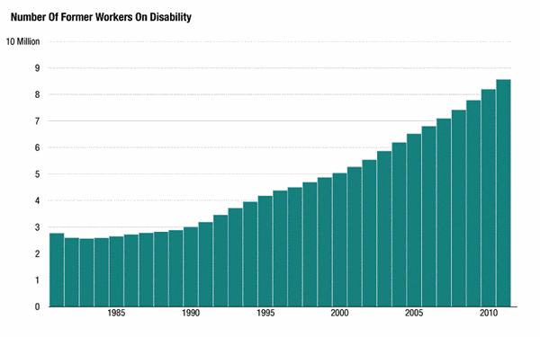
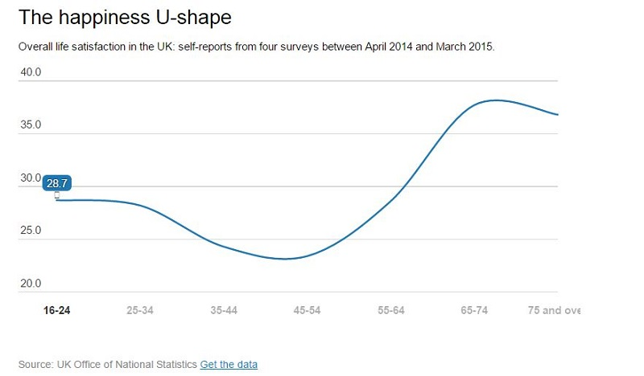
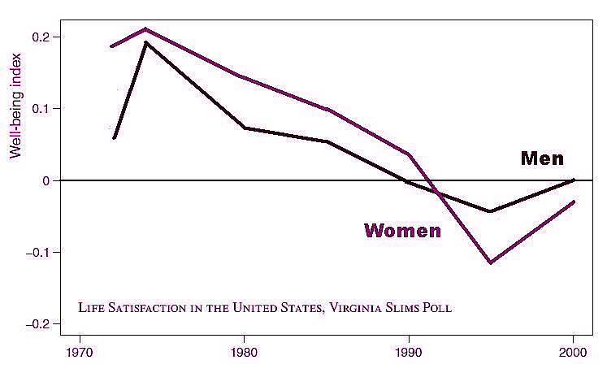
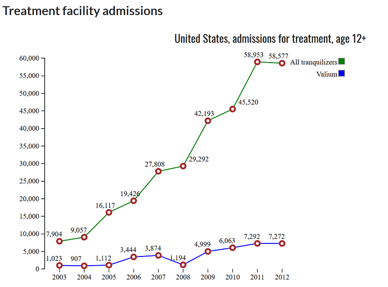
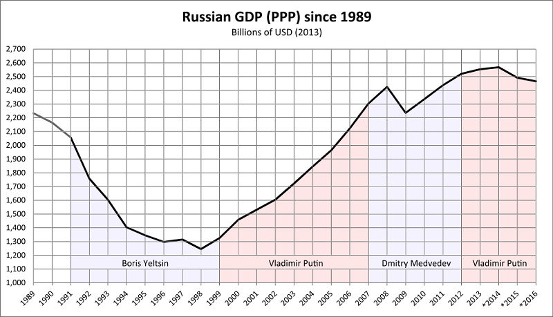

2018년 5월 16일
Please provide the paragraph you would like me to translate.
2020년 대통령 후보 지명을 노리는 일부 민주당원들에게는 거창한 아이디어가 하나 있다. 바로 정부가 일자리를 원하는 모든 이에게 고용을 보장하는 기본 일자리 보장제(basic jobs guarantee)다. 코리 부커(Cory Booker), 커스틴 질리브랜드(Kirsten Gillibrand), 엘리자베스 워런(Elizabeth Warren), 그리고 버니 샌더스(Bernie Sanders) 모두가 이 계획을 검토 중인 것으로 알려져 있다.
나는 이전에 기본소득 보장제를 주장한 적이 있으며, 기본직업 보장제 역시 그것과 상당히 비슷하게 들린다. 일부 사상가들은 두 계획을 비교하며 기본직업 보장제의 여러 장점을 지적하기도 했다. 사람들이 돈을 벌기 위해 일하게 만드는 것이 더 "공정하게" 느껴지고, 생산적인 활동을 한다는 심리적 고양감이 있을 수 있으며, 그 노동력을 유용한 프로젝트에 투입할 수 있다는 점 등이다. 사이먼 새리스(Simon Sarris)는 왜 기본직업 보장제가 UBI(universal basic income, 보편적 기본소득)보다 더 나은 성과를 낼 수 있는가에 관한 길고 훌륭한 글에서 다음과 같이 말한다.
기본소득(UBI)의 '돈 뿌리기' 식 접근법은 특정한 종류의 빈곤을 해결하는 데 최적화되어 있지만, 장기적으로는 오히려 더 많은 빈곤을 초래할 수도 있다. 반면 기본 일자리(Basic Jobs)는 지역사회에 노동과 기회를 제공하며, 이는 더 나은 복지 최적화 전략이 될 수 있다. 또한 우리는 가장 가난한 이들을 돕기 위한 표적 지원 방식을 유지하면서도 이를 실행할 수 있다.
나는 이에 전적으로 반대한다. 기본 일자리(basic jobs)가 아무것도 없는 것보다는 나을지도 모르겠지만, 기본 소득(basic income)의 대안으로 기본 일자리를 도입한다는 생각에는 100% 절대적인 혐오감을 느낀다. 그 혐오감 자체에 대해 논하기 전에, 우선 좀 더 실무적인 반론들을 제기하고자 한다.
장애율은 지난 20년 동안 두 배로 증가했으며, 지금도 계속해서 늘어나고 있다.

장애율의 상승이 국가 전반의 건강 악화를 반영하는 것인지, 아니면 점점 더 기능 부전 상태에 빠진 노동 시장에서 벗어날 방법을 찾은 결과인지에 대해서는 전문가들 사이에서도 의견이 갈린다. 하지만 이 추세가 계속될 것이라는 점에는 모두가 동의한다. 전통적인 실업자에게만 집중하고 장애인을 배제하는 비취업 빈곤층 대상 프로그램은 빙산의 일각만을 다루는 것에 불과하다.
현재의 장애인 복지 시스템에는 적어도 세 가지의 주요한 문제가 있으며, 나는 기본소득이 이를 해결해 줄 것이라 기대한다.
우선, 장애 수당 신청 과정은 엉망진창이다. 친구에게 받은 수상쩍은 중고차의 등록증을 떼기 위해 겪었던 최악의 차량등록사업소(DMV) 방문 경험을 떠올려 보라. 그리고 그것을 천 배로 곱한 뒤, 그 모든 과정을 일을 할 수 없을 정도로 장애가 있는 상태에서 수행해야 한다고 상상해 보라. 명백한 사례의 신청서조차 처리되는 데 수개월이 걸릴 수 있으며, 이는 그 기간 동안 수입원이 어디인지 알 수 없는 이들에게 엄청난 부담을 준다. 정신 질환이나 만성 통증처럼 증명하기 까다로운 상태에 있는 사람들은 여러 차례의 이의 신청이 필요할 수 있으며, 이로 인해 과정이 수년 동안 길어지거나 아예 승인을 받지 못할 수도 있다. 내가 대화를 나눠본 장애인들은 대체로 이 과정의 모든 것을 혐오한다.
둘째로, 장애는 취업하지 못한 사람들을 모두 포괄하는 범주가 되어가고 있다. 이는 반드시 수행되어야 할 유용한 기능이다. 하지만 현재로서는 실업자들이 장애를 조작하거나 과장하는 상황을 초래하고 있다. 이는 거짓말쟁이에게는 보상을, 정직한 이들에게는 벌을 주는 꼴이다. 만약 사회가 이 시스템에 "장애인 전용"이라는 라벨을 붙인다면, 장애인과 납세자, 그리고 시스템을 악용하지 않는 정직한 노동자들에 대한 기본적인 공정성을 위해서라도 진입 장벽을 세워 관리해야만 한다. 현재도 진입 관리에 많은 시간과 비용을 쏟고 있지만, 대부분 실패하고 있다. 그러나 이를 단속하려는 모든 시도는 첫 번째 문제, 즉 실제 장애인들이 인정을 받기까지 카프카(Kafka) 소설 속 인물처럼 수개월에서 수년을 허비해야 하는 문제를 더욱 악화시킬 것이다.
셋째, 앞서 언급한 첫 번째와 두 번째 문제 때문에 장애인들은 끊임없이 자신을 증명해야 한다는 압박감을 느낀다. 때로는 상태가 호전되는 날이 있다. 많은 질환이 재발과 완화를 반복하기 때문이다. 그럴 때면 공원에 가서 놀거나 무언가를 하고 싶어질 것이다. 하지만 그러면 어떤 이웃이 "저 사람 꽤 건강해 보이는데"라고 생각하며 사진을 찍을지도 모른다는 걱정을 해야 한다. 결국 '공원에서 운동하다 적발된 소위 장애인' 같은 헤드라인의 기사 주인공이 될 수도 있기 때문이다. 때로는 행정적인 문제가 발목을 잡기도 한다. 내 환자 중에 몇 년간 장애 수당을 받다가, 주당 10시간 정도는 일할 수 있을 만큼 회복되었다고 생각한 사람이 있었다. 하지만 실제로 일을 추진하려 하자 장애 수당이 끊긴다는 사실을 알게 되었다. 정부는 조금이라도 일을 할 수 있다면 정말로 장애가 있는 것이 아니라고 믿는 모양이었다. 그런데 주당 10시간의 노동으로는 생계를 유지할 수 없었다. 결국 그는 새 직장을 포기했고, 아예 일을 하지 않게 되었다.
'진짜' 장애인과 가짜를 가려내는 것을 목표로 하는 시스템을 유지하는 한, 이러한 문제들은 계속 발생할 수밖에 없다. 하지만 심사라는 문턱을 없애버리면, 거짓말을 하려는 사람은 누구나 일을 피할 수 있고 정직한 동료들만 하루 종일 고생하는 불공정한 시스템이 된다. 기본소득은 장애 여부와 상관없이 모든 사람이 법적으로 지원을 받을 권리가 있다고 제안함으로써 이 고르디우스의 매듭을 끊어낸다. 장애인은 까다로운 심사 없이 지원금을 받을 수 있고, 부정행위를 통해 얻을 수 있는 이득 또한 사라지기 때문이다.
기본 일자리(Basic jobs)는 이러한 해결책을 포기하고 우리를 다시 현재의 시스템으로 되돌려 놓는다. 정부가 제공하는 일자리를 수행할 능력이 충분하다면, 당신은 반드시 그 일을 해야만 한다. 그렇다면 당신의 능력이 충분한지는 누가 결정하는가? 바로 카프카적(Kafkaesque)인 문지기들이다. 결국 우리는 똑같은 관료적 절망과, 시스템을 속이려는 똑같은 시도들, 그리고 똑같은 왜곡된 유인 구조를 마주하게 된다.
그리고 장애 급여 신청 건수는 계속해서 증가하고 있다. 많은 경제학자들은 노동을 기피하고 장애 급여로 향하는 현상이, 바로 '기본 일자리' 옹호자들이 모두에게 제공하고 싶어 하는 종류의 저임금 고된 노동에 대해 사람들이 '발로 투표(voting with their feet, 행동으로 거부함)'하고 있기 때문이라고 생각한다는 점을 기억하라. 사람들은 기본 일자리 패러다임 내에서는 명확한 해결책이 없는 그 일자리들에 대해서도 똑같이 거부권을 행사할 것이다.
또한 실업자의 10%에서 15%는 아픈 가족을 돌보는 사람들이다.
이는 피할 수 없는 일이며 현재로서는 아무런 보상도 이루어지지 않고 있다. 에이징케어 케어기버(AgingCare Caregiver) 포럼에 따르면, 그들이 받는 “가장 많은 질문”은 병든 부모나 노부모를 돌보기 위해 직장을 쉬어야 하는 사람이 지원금을 받을 수 있는지 여부라고 한다. 그들이 내놓을 수 있는 유일한 답변은 “돌보는 대상이 돈이나 보험이 있다면, 아마 그 사람이 당신에게 비용을 지불할 수 있을 것”이라는 말뿐이다. 만약 그렇지 않다면, 운이 없는 셈이다. [수정: 보아하니 일부 주에서는 이에 대해 약간의 지원금을 제공하는 것으로 보인다].
현재 우리 사회는 이 문제에 대해 그냥 손을 놓고 있다. 그렇다고 사회를 탓할 수는 없다. 가족을 돌보는 사람들에게 돈을 지급하는 것은 비용이 너무 많이 들기 때문이다. 또한, 이는 장애인 판정 관료제조차 무색하게 만들 정도의 까다로운 심사 관료제를 필요로 할 것이다. 누군가가 정말로 돌봄 없이는 생존할 수 없는지를 평가해야 할 뿐만 아니라, 어떤 친척에 대해 누가 그 옵션을 선택할 수 있을지도 결정해야 한다. 나에게는 촌수가 꽤 먼, 심한 장애를 가진 재종형제가 있다고 치자. 내가 직장을 그만두고 그를 돌보는 대가로 적절한 급여를 받을 수 있을까? 만약 내가 그를 한 번도 만난 적도 없고 전화 통화를 해본 적도 없으며, 그가 존재하고 아프다는 사실을 할머니의 말로만 전해 들었다고 한다면 어떻게 될까? 정확히 무엇을 '돌봄'으로 간주해야 하는가? 내가 재종형제가 평소보다 더 악화되지 않았는지 확인하기 위해 하루에 한 번 한 시간씩 방문한다면, 정부가 나에게 정식 급여를 지급해야 할까? 하지만 실제로 그렇게 하는 것이 재종형제의 생존에 100% 필수적이며, 직장 생활을 병행하면서는 이를 일관되게 수행할 수 없다고 한다면 어떨까? 이 모든 문제를 공정하게 처리할 수 있는 관료제란 결코 만들어질 수 없다.
기본소득은 다시 한번 이 고르디우스의 매듭을 끊어낸다. 모든 이에게 충분한 돈을 지급함으로써, 본인이 원한다면 병들거나 나이 든 친구나 친척을 돌볼 수 있게 해주기 때문이다. 이러한 수준의 돌봄(그 이상이 아닌 딱 그 정도의 돌봄)을 제공하겠다는 선택을 정부에 정당화할 필요가 없다. 그저 해야 할 일을 하면 그만이다.
기본 일자리(Basic jobs)는 이 문제에서 다시 한번 실책을 범한다. 만약 당신의 어머니가 임종을 앞두고 있다면, 당신은 곁에서 어머니를 도울 수 없다. 정부가 당신에게 하루 종일 도랑을 팠다 메우는 일을 시킬 것이기 때문이다. 그 이유는 어딘가에서 누군가가 '자격'을 갖출 만큼 충분한 가짜 일(make-work)을 하지 않고 돈을 챙기고 있을지도 모른다는 사람들의 불안감을 달래주기 위해서다.
위의 모든 상황이 동일하지만, 이번에는 당신이 한부모 가정의 부모(혹은 배우자도 일을 해야 하는 맞벌이 부모)이며 아이를 돌보고 싶어 하는 상황이라고 가정해 보자. 만약 보육비를 감당할 여유가 있었다면, 아마 당신은 보장된 기본 일자리(guaranteed basic job)를 신청해야 할 처지의 사람은 아니었을 것이다. 그렇다면 당신은 어떻게 해야 하는가?
기본 일자리론자들이 이 문제에 대해 어떤 해결책을 내놓을지 나는 이미 알고 있다. 바로 모두를 위한 무료 보육 서비스다! 좋다. 그러니까 당신들은 역사상 가장 비용이 많이 드는 정부 프로그램을 제안하는 것도 모자라, 동시에 두 번째로 비용이 많이 드는 정부 프로그램까지 통과시켜 이를 보완하고 싶다는 말인가? 행운을 빈다.
하지만 이런 점을 차치하더라도, 잠시 물러나 우리가 지금 무엇을 하고 있는지 생각해보길 바란다. 나는 아이들의 인생에서 가장 소중한 시절을, 9시부터 5시까지 이어지는 고된 노동과 출퇴근길의 교통 체증 속에 갇혀, 혹은 퇴근 후 아이들과 시간을 보내기엔 너무 지쳐버린 상태로 허비해야 한다는 생각에 가슴 아파하는 이들을 만나왔다. 대부분 어머니들이었지만 아버지들도 있었다. 이들은 아이의 첫걸음마를 놓치고, 아이가 처음 내뱉는 말들을 저임금 보육 시설 직원들에게 맡겨야 하며, 아이의 학교 연극에 참석하는 것과 식탁에 올릴 음식을 마련하는 것 사이에서 선택을 강요받는다.
그리고 만약 우리가 국고를 확인해 본 결과, 사회 전체적으로 이 문제를 해결할 돈이 충분하지 않다는 결론을 내린다면—뭐, 어쩔 수 없다. 우리는 이 문제를 해결할 돈이 없는 것이다.
하지만 정작 확인해 보니 돈은 충분하고도 남았다는 사실을 알게 될까 봐 걱정된다. 그런데 누군가는 가난한 이들이 자신의 존재 가치를 증명하기 위해 무의미한 잡무에 매달리게 만드는 것에 너무나 열광한 나머지, 결국 문제를 계속 유지해야 한다고 고집할 것이다. 그리고 만약 그 때문에 보편적 무상 보육 서비스 비용까지 지불해야 한다면, 우리는 문제를 최대한 효과적으로 지속시키기 위해 추가 비용을 지출하게 될 것이다. 우리는 이렇게 말하게 될 것이다. “8,000억 달러로 기본 소득을 지급할 수도 있고, 9,000억 달러로 기본 일자리와 보편적 보육을 제공할 수도 있습니다. 그런데 그 추가 비용 1,000억 달러가 무엇이냐고요? 그건 당신이 집에서 아이들과 시간을 보내는 대신, 하루 종일 땅을 팠다 메웠다 하게 만들기 위해 쓰는 돈입니다.”
가난한 사람들의 지출 항목 중 가장 큰 비중을 차지하는 두 가지는 주거비와 교통비이다.
보장된 일자리라는 것은 결국 어딘가에 존재해야 한다. 대부분의 일자리는 사람들이 모여 사는 대도시에 집중될 것이다. 시골 지역의 일자리는 극히 드물고 여기저기 흩어져 있을 수밖에 없다.
즉, 정부가 지정해 준 직장에 다니려면 대도시에 살거나 자동차를 소유해야 한다는 뜻이다. 대도시에 산다는 것은 월세를 세 배로 내야 함을 의미한다. 자동차를 소유한다는 것은 할부금, 보험료, 수리비, 기름값, 그리고 기타 잡비가 든다는 뜻이다.
가난한 환자들을 처음으로 진료하기 시작했을 때, 나는 그들의 삶에서 발생하는 문제 중 얼마나 많은 부분이 자동차와 관련되어 있는지 보고 충격을 받았다. 나처럼 여유 있는 사람들에게 자동차란 배경 소음 같은 것이다. 적당한 가격에 사거나 리스하면 그 이후로는 전혀 신경 쓸 일이 없다. 하지만 가난한 사람들은 차를 살 여력이 없고, 리스를 하기에는 신용 점수가 충분하지 않은 경우가 많다. 그래서 그들은 끊임없이 고장 나는 낡고 수상쩍은 중고차를 타게 된다. 내가 반복해서 들었던 불평은 다음과 같았다. “차가 고장 났는데 수리비가 없어요. 출근을 못 하면 해고당할 거예요.” 어떤 이들은 보험료를 감당하지 못해 위험을 무릅쓰고 무보험으로 운전한다. 또 어떤 이들은 경찰과 여러 차례 문제가 얽혀 면허가 취소되었지만, 그렇다고 직장에 안 나갈 수는 없기에 체포되지 않기만을 바라며 계속 운전대를 잡는다.
그다음으로는 소소한 지출들이 있다. 직장에 휴게실이 없어서 점심을 밖에서 사 먹어야 하고, 그러다 보면 식비의 상당 부분이 날아간다. 직장 생활을 하려면 완전히 새로운 비즈니스 복장들이 필요하므로 의류비는 두 배로 든다. 일반적인 업무 시간 중에는 어디를 갈 수 없으니, 업무 시간 외 서비스에 추가 비용을 지불해야 한다.
그리고 앞서 언급한 모든 문제들이 뒤따른다. 더 이상 아이들을 직접 돌볼 수 없으니, 어린이집이나 보모 비용을 지불하거나 아이들을 조부모 댁으로 보내기 위해 우버(Uber)를 불러야 한다. 병든 부모님을 더 이상 직접 모실 수 없으니, 가사 간병인을 고용해 돌보게 해야 한다. 업무로 인한 긴장이나 스트레스가 쌓이면, 병원 진료비라는 비용이 발생한다.
그리고 좀 더 모호한 문제들도 있다. 온종일 직장에서 시간을 보내고 정말 녹초가 된 상태에서, 온전히 자신만을 위한 시간이 전혀 없다면, 도시 반대편에 있는 더 저렴한 슈퍼마켓까지 운전해 갈 기운조차 남아 있지 않을지도 모른다. 새로 살 컴퓨터의 최저가를 샅샅이 찾아볼 시간이 없을지도 모른다. 임금 노예와 같은 삶 속에서 나 자신에게 근사한 것 하나쯤은 선물하겠다는 과소비를 억제할 의지력이 부족할지도 모른다. 이 모든 것이 다소 부끄럽게 들릴 수도 있겠지만, 이는 내 환자들이 내게 털어놓았던 이야기들이며, 나 역시 꽤 괜찮은 고연봉 직장을 다니고 있음에도 불구하고 때때로 저지르는 일들이다.
언젠가 한 경제학자가 실업이 왜 존재하는지에 대해 논하는 글을 읽은 적이 있다. 즉, 집을 청소해주거나, 아이를 돌봐주거나, 집에 와서 요리를 해줄 사람을 원하는 이들은 언제나 존재한다는 것이다. 또한 바닥이 조금 더 깨끗해지기를 원하거나, 고객 응대가 조금 더 빨라지기를 원하거나, 안전을 위해 보안 요원을 한 명 더 두고 싶어 하는 기업들 역시 언제나 존재한다. 그렇다면 기업들은 이런 일들을 처리하기 위해 어느 정도의 돈은 기꺼이 지불하지 않겠는가? 그리고 거리에서 굶주리느니 그 적은 돈이라도 받는 쪽을 택할 노숙자가 분명히 있을 것 아닌가? 그런데 왜 여전히 실업자가 존재하는 것일까?
하나의 답은 최저임금일 것이다. 하지만 최저임금이 없거나 이를 쉽게 회피할 수 있는 시대와 장소에서도 왜 이런 일이 발생하는 것일까?
그 경제학자는 모든 직원이 순이익을 가져다주는 것은 아니라고 제안했다. 직원은 당신의 물건을 훔치거나, 고객의 기분을 상하게 하거나, 혹은 전반적으로 이상하고 냄새가 나서 분위기를 망칠 수도 있다. 지각을 하거나 아예 출근하지 않을 수도 있는데, 만약 그 직원이 있을 것이라는 전제하에 계획을 세웠다면 이는 애초에 고용하지 않은 것보다 더 최악의 상황이 될 수 있다. 무능한 보모는 아이에게 트라우마를 남길 수 있고, 서툰 가사 도우미는 당신의 값비싼 꽃병을 깰 수도 있다. 소송을 즐기는 직원은 허위 사실로 당신을 법정에 세울 수도 있다. 목소리가 크고 당신에게 욕설을 내뱉으며 항상 마리화나 냄새를 풍기는 누군가가 곁에 있다면, 당신은 그저 내내 조금 더 스트레스를 받고 불행해질 뿐이다.
따라서 어떤 일자리가 창출하는 효용은 1에 불과한데, 무능한 직원을 뽑았을 때 발생하는 손실이 10이고, 어떤 직원을 뽑든 무능할 확률이 10%라고 가정해 보자. 그렇다면 사람들이 아무리 낮은 임금을 받고 일하겠다고 해도, 당신은 결코 그 자리를 채우지 않을 것이다.
직원들이 얼마나 엉망일 수 있을까? 다음의 애스크레딧(AskReddit) 링크들을 읽어보라. 주제에서 약간 벗어나긴 하지만, 다른 어떤 방법으로도 얻을 수 없는 정보들을 제공해 줄 것이다.
내 주변에는 놀라울 정도로 도덕적이고 성실한 실업자들이 많다. 하지만 동시에 BART(샌프란시스코 베이 지역 급행철도) 역 근처 판지 상자 속에 살며, 버려진 맥주 캔으로 보호막을 치고, 알 수 없는 이유로 행인들에게 "끄아아악!"이라고 소리를 지르는 실업자도 알고 있다. 전자의 놀랍고 도덕적이며 성실한 사람들은 결국 민간 부문에서 일자리를 구할 가능성이 꽤 높지만, "끄아아악!"이라고 소리 지르는 그 남자는 절대 그럴 일이 없을 것이다. '기초 일자리'가 필요한 인구 집단은 일반적인 노동 시장에 적응하지 못하는 사람들로 불균형하게 구성될 가능성이 크다. 과연 결과가 어떻게 될 것 같은가?
어떤 이들은 기본 소득 대신 기본 일자리를 선택하는 것이 곧 무임금 노동을 의미한다고 생각하는 것 같아 우려스럽다. 예를 들어, 누군가에게 연간 1만 달러의 기본 소득을 지급하려는데 그 사람의 노동 시장 가치가 연간 8천 달러라면, 그를 무료 급식소에서 일하게 하여 8천 달러만큼의 가치를 얻어내고 결과적으로 연간 2천 달러만 "손해" 보는 식으로 운영할 수 있다는 생각 말이다.
나는 그만큼 낙관적이지 않다. 사람들에게 연간 1만 달러를 지급한다면, 당신이 잃는 돈은 그저 연간 1만 달러뿐이다. 하지만 그들을 고용해 무료 급식소를 운영하게 했는데, 위생 위반으로 급식소가 계속 문을 닫아야 하거나, 누군가 손님을 성추행해 성희롱 소송에 휘말리거나, 누군가 가스레인지를 켜둔 채 나가서 불이 나거나, 혹은 관리자가 수프를 달라는 모든 사람에게 "끄아아악!"이라고 소리를 지르는 바람에 손님을 다 잃게 된다면, 당신의 손해는 그보다 훨씬 커질 것이다.
가령 누군가가 정말로 실수로 가스레인지를 켜두어 무료 급식소를 태워 먹었다고 치자. 그를 농업 공동체로 옮겼더니 이번에는 트랙터를 몰고 나무를 들이받는다. 위험 부담이 적은 단순 사무직으로 옮겨주었지만, 그는 매일 지각하는 데다 일주일에 한두 번은 아예 출근조차 하지 않고, 결국 중요한 서류들은 비극적이게도 처리되지 않은 채 방치된다. 시간이 흐른 뒤, 당신은 이 사람이 제공되는 그 어떤 프로그램에서도 0 이상의 가치를 창출하기에는 너무 무능하다고 판단한다. 이제 그를 어떻게 처리할 것인가?
만약 그들을 해고한다면, 그것은 더 이상 '기본 일자리 보장'이 아니다. 그것은 '상사가 좋아하는 숙련된 노동자를 위한 기본 일자리 보장'일 뿐이다. 우리는 이미 그런 시스템을 가지고 있다. 바로 자본주의(capitalism)라고 하는데, 아마 들어본 적이 있을 것이다. 하지만 빈곤에 대한 진정한 해결책이라면, 단순히 시스템 내에서 일 잘하는 사람들만이 아니라 모든 이를 포괄해야 한다.
그리고 만약 그들을 해고하지 않는다면, 대안이 무엇인가? 어느 정도의 기물 파손과 고객 불만, 동료들의 원성, 그리고 무단결근을 그냥 받아들이겠다는 것인가? 그들이 주변 모든 사람을 불행하게 만들도록 내버려 두겠다는 말인가? 미국 내의 모든 인간이 그곳에서 일할 수 있게 하겠다는 신념에 완전히 매몰된 나머지, 당신의 무료 급식소를 무슨 연방 재난 지역처럼 만들 셈인가?
아니면 그들을 푹신한 벽지로 둘러싸인 방에 가두고, 아무도 신경 쓰지 않기에 누구에게도 방해가 되지 않는 방식으로 블록을 쌓았다가 다시 무너뜨리는 일자리에 배치할 것인가? 가난한 사람들에게 단순 반복 노동(busy-work) 외에는 아무것도 만들지 않겠다는 사실을 이제는 솔직히 인정하는 게 어떤가. 매주 40시간을 지루함과 비참함 속에서 보내지 않는 한 그 누구도 편안하게 살 수 없게 만들겠다는 그 집요한 욕망 말이다.
아니면 이런 사람들에게 기본 소득을 제공하고, 성실한 직원들이 하루 종일 구덩이를 파는 동안 무능한 이들이 집에서 가족과 함께 여가를 즐기게 했다는 이유로 다른 모든 직원들이 당신을 증오하게 만들 것인가?
이것은 막연한 미래에 대한 추측이 아니다. 이러한 문제들은 "정부는 구성원이 얼마나 머물고 싶어 하지 않든 상관없이 모두를 수용해야 한다"는 기존의 제도, 즉 공립학교(public school)라는 공간에서 전국적으로 매일같이 벌어지고 있다. 지난번 공립학교 시스템에 대해 논했을 때 한 독자가 보내온 글을 인용해 보겠다.
내 친구 중에 워싱턴 DC 중심부의 한 공립 고등학교에서 잠시 교사로 일했던 친구가 있다(80% 정도의 확신으로 카도조 고등학교(Cardozo High)였던 것 같다). 그는 수년간 청소년 캠프 상담사와 방과 후 프로그램 상담사로 일한 경험이 있어 교육적 배경을 갖추고 있었고, 그 정도면 DC 공립학교(DCPS)의 단기 교사 양성 프로그램 자격을 얻기에 충분했다(그가 활동했던 2009년 당시에는 그런 프로그램이 있었는데, 지금도 있는지는 모르겠다). 양성 과정 중에 그는 자신이 배우고 있는 교수법에 대한 열정과 이를 현장에서 적용하고 싶다는 의욕에 대해 이야기했던 기억이 난다(지금 되돌아보면, 직장 생활이 그리 나쁘지 않을 것이라고 스스로를 설득하려 했던 불안 섞인 시도가 아니었을까 싶다). 몇 달의 공백 후 다시 이야기를 나누었을 때, 그는 직업에 대해 거의 완전히 환멸을 느낀 상태였고 이미 그만둘 생각을 하고 있었다. 그가 말했던 내용은 다음과 같다.
그가 이 일들을 나에게 설명할 때 얼마나 낙담하고 스트레스를 받았는지 나는 결코 잊지 못할 것이다. 미국 공립학교에서 가르쳐본 적이 없었기에 나는 상황이 얼마나 심각한지 깨닫지 못했고, 그의 구체적인 일화들은 나에게 정말 큰 충격을 주었다. 나는 그에게 일단 그 고등학교에서 1년은 채우고, 급여가 낮아지거나 통근 시간이 길어지더라도 지역 내의 '어떤' 비도시 지역 학교로든 옮기라고 조언했다. 그 후로 연락이 끊겼지만, 그가 여전히 DCPS에서 일하고 있을 것 같지는 않다.
교육 시스템이 여전히 인기를 끄는 이유는, 리치 오크스 마그넷 고등학교(Rich Oaks Magnet High School)의 미소 짓는 상류층 아이들이 담긴 화려한 포스터를 내밀며 시스템이 잘 작동하고 있다고 주장할 수 있기 때문이다. 하지만 기본 일자리(basic jobs)는 주로 최빈곤층 인구 중에서 선발하게 될 것이며, 결국 가장 가난한 공립학교들이 겪었던 것과 동일한 문제에 직면하게 될 것이다. 즉, 사람들의 품행 단정을 요구하면서도, 정작 잘못된 행동에 대해 실효성 있는 불이익을 줄 방법은 없다는 문제 말이다.
기본소득은 이러한 문제를 피할 수 있게 해준다. 기본소득은 성실한 직원과 그렇지 못한 직원 모두에게 돈을 지급하되, 어떤 사업장에도 생산성이 낮거나 위협적이라고 판단되는 인원을 억지로 고용하도록 강요하지 않으며, 그 누구를 위해서도 굴욕적인 가짜 일자리(make-work jobs)를 만들어낼 필요가 없게 만든다.
그리고 이것이 관리자들에게만 문제라고 생각하신다면, 직원들이 무엇을 견뎌내야 하는지 알게 될 때까지 조금만 더 기다려 보라.
어떤 상사들은 무능하다. 어떤 이들은 탐욕스럽고, 어떤 이들은 그야말로 학대 수준으로 사람을 대한다. 딱히 꼬집어 말할 만한 뚜렷한 결점은 없는데도, 매일매일을 비참한 감정적 소모전으로 만들어버리는 상사들도 있다. 때로는 상사는 괜찮지만 동료들이 기분 나쁜 사람들이거나, 괴롭힘을 일삼거나, 혹은 자기 몫의 일을 제대로 하지 않는 경우도 있다. 상사와 동료 모두 괜찮더라도, 직무 자체가 본인의 성격이나 감당할 수 있는 역량에 맞지 않는 경우도 있다.
민간 산업 분야에서 사람들은 직장을 그만두고 더 나은 곳을 찾는 방식으로 상황에 대처한다. 이것이 완벽한 시스템은 아니다. 다른 직장을 구할 수 있을지 확신이 없거나, 이직 사이의 공백기를 버틸 돈이 부족해서 싫어하는 일에 매여 있는 사람이 많다. 이것이 바로 직장을 쉽게 옮길 수 없는 가난한 이들이 그럴 여력이 있는 부유한 이들보다 더 열악한 노동 환경에 처하게 되는 이유 중 하나다. 하지만 적어도 원칙적으로는, 업무가 견딜 수 없는 수준이 되었을 때 누구에게나 선택지는 열려 있다.
보장된 기본 일자리 외에는 그 어떤 일자리도 구할 수 없는 사람들은 어떻게 되는가? 그들은 학대적인 노동 환경에 어떻게 대처해야 하는가?
아마 누군가는 당신이 현재의 기본 일자리를 그만두고 같은 도시 내의 다른 일자리로 옮길 수 있게 하는 시스템을 구축할 것이다. 하지만 실제로는 그보다 훨씬 더 복잡한 상황이 벌어질 가능성이 높다. 완벽하고 편안한 자리를 찾아 일주일이나 이주일마다 직장을 옮겨 다니는 사람은 어떻게 처리할 것인가? 반경 100마일 이내에 기본 일자리가 단 하나뿐인 경우는 어떻게 해결할 것인가? 모두가 소수의 정말 좋은 일자리만을 원하고, 길 건너편의 끔찍하고 가혹한 무료 급식소에서는 아무도 일하고 싶어 하지 않는 상황은 또 어떻게 다룰 것인가?
사람들은 이러한 문제들을 해결하기 위해 시스템을 구축하겠지만, 그 시스템은 오늘날의 공립학교 전학 시스템이나, 탈출 권리(exit rights)를 대체하기 위해 사람들이 고안해낸 다른 모든 영리한 하향식 사회주의 시스템들처럼 다루기 힘들고 비효율적일 것이다. 아마도 이러한 문제들의 날카로운 모서리는 어느 정도 깎아낼 수 있겠지만, 그 결과에 진정으로 만족하는 사람은 아마 아무도 없을 것이다.
기본소득은 이 문제를 해결한다. 기본소득은 그 누구도 자신이 싫어하는 직장에 억지로 머물게 하지 않는다.
내 꿈속에서 정부는 최저 생계비보다 조금 더 높은 수준의 기본 소득을 제공할 방법을 찾아낸다. 그러면 다음 날, 끔찍한 맥잡(McJob, 저임금 단순 노동직)에 종사하던 모든 사람이 일제히 그만둔다. 그곳에서 일해야 했던 유일한 이유가 그렇지 않으면 생존할 수 없었기 때문이었으므로, 이제는 더 이상 그럴 이유가 없기 때문이다.
그 이후에는 두 가지 시나리오 중 하나가 펼쳐진다. 첫째, 맥도날드(McDonald’s)가 인간의 도움 없이도 음식을 제공할 수 있는 환상적인 로봇을 개발하기 위해 필사적인 노력을 기울이는 경우다. 이 경우 사회와 로널드 맥도날드(Ronald McDonald)는 함께 건배를 나누게 된다. 맥도날드는 가치 있는 서비스를 제공하며 수익성 있는 기업으로 남는 데 성공했고, 가난한 이들은 하루 8시간 동안 햄버거 패티를 뒤집지 않고도 안락한 삶을 누리게 된다.
아니면 로봇을 발명하는 것이 너무 어려워서, 맥도날드(McDonald’s)가 사람들을 다시 유인해야 할지도 모른다. 그들은 임금을 올리고 근로 조건을 개선하여, 맥도날드에서 일하며 사치품을 누릴 가능성이 기본소득만으로 연명하며 최저 생계 수준으로 사는 것보다 더 나은 상황을 만들 것이다. 아마 맥도날드는 가격을 올려야 할 것이고, 심지어 일부 매장을 폐쇄해야 할 수도 있다. 하지만 다시 말하지만, 맥도날드 같은 곳은 계속 존재할 것이며 노동자들은 상대적으로 풍족한 삶을 누리게 될 것이다.
부실하게 계획된 기본 일자리 보장제는 오히려 문제를 악화시킬 수 있다. 정부가 무료 노동력을 활용해 소를 키우기로 결정했다고 가정해 보자. 이렇게 되면 여러 민간 축산 기업들이 도산하게 된다. 결국 정부는 복지 예산으로 직원에게 임금을 지급할 수 있지만, 민간 기업은 수익금으로 임금을 줘야 하기 때문이다. 실직한 축산 농가 일부는 보장된 기본 일자리를 얻게 되고, 이는 또 다른 민간 기업들을 몰락시킨다. 그리고 또 다른 실직 농가들은 맥도날드(McDonald’s)로 흘러 들어가 맥도날드 직원 공급을 늘림으로써, 결과적으로 더 낮은 임금과 더 열악한 노동 조건을 고착화한다.
잘 계획된 기본 일자리 보장제가 기본 소득과 동일한 효과를 낼 수 있다는 점을 부정하려는 것은 아니다. 만약 정부가 제공하는 일자리가 맥도날드(McDonald’s)보다 낫다면, 맥도날드는 사람들을 다시 끌어들이기 위해 임금을 올리고 처우를 개선해야 할지도 모른다. 그 효과의 방향은 정부 일자리의 질이 얼마나 좋은지, 그리고 민간 산업과 얼마나 많이 경쟁하는지에 달려 있을 것이다. 내 예측으로는 정부 일자리는 매우 형편없을 것이며 민간 산업과 상당 부분 경쟁하게 될 것이기에, 결국 그 효과는 부정적일 것이라 예상한다.
내게는 미래가 보이지 않는 막다른 커리어 경로에 갇혀 있던 친구가 한 명 있다. 급여는 꽤 괜찮았지만, 그는 자신의 직업이 나아가는 방향이 정말 마음에 들지 않았다. 그래서 그는 1년 동안 생활할 수 있을 만큼의 돈을 모았고, 1년 동안 독학으로 코딩을 공부한 뒤 프로그래머 직군에 지원해 합격했다. 그제야 그는 자신의 경제적 상황에 대해 훨씬 더 안도감을 느꼈다.
비슷한 상황에 처한 환자가 한 명 있었다. 그녀는 자신의 직업을 혐오했고 정말로 그만두고 싶어 했지만, 다른 일을 구할 만한 기술이 부족했다. 그래서 야간 학교에 등록했으나, 결국 해낼 수 없다는 사실을 깨달았다. 매일 8시부터 6시까지 근무한 뒤, 곧바로 긴 밤의 공부로 이어가는 것은 그녀의 역량 밖의 일이었다. 게다가 그녀의 소득으로는 돈을 좀 모아 1년 정도 쉴 수 있는 여유조차 없었다. 결국 그녀는 포기했고, 여전히 혐오하는 그 직장에서 일하고 있다. 끝.
기본소득은 일하기를 원하는 모든 이들에게 내 친구가 누렸던 것과 동일한 기회를 제공할 것이다. 즉, 재정적 파멸을 겪지 않고도 1년 정도 쉬면서 자아를 가꾸고, 새로운 것을 배우고, 학교에 다니거나 경력을 쌓을 수 있는 능력을 말이다.
기본 일자리 제도는 모든 사람을 내 환자와 똑같은 처지로 몰아넣을 것이다. 매주 40시간 넘게 일해야 하고, 매주 몇 시간씩 출퇴근길에 쏟아부어야 하며, 정신줄을 놓지 않으면서 동시에 그런 삶에서 벗어날 티켓을 거머쥘 시간을 찾으려면 운이 아주 좋아야만 하는 그런 처지 말이다.
업무에서 벗어난 시간을 활용해 할 수 있는 더 창의적인 일들은 얼마든지 있다. 기업가들은 흔히 '런웨이(runway, 자금 소진 시점까지 남은 기간)'에 대해 이야기하곤 한다. 즉, 돈을 계속 쏟아붓다가 결국 바닥이 나서 새로운 사업의 실패를 선언해야 할 때까지 얼마나 버틸 수 있느냐는 것이다. 때로는 사무실 임대료나 직원 급여 같은 비용이 런웨이를 결정하지만, 1인 기업의 경우에는 보통 "아직 수익이 나지 않는 이 회사를 운영하면서 얼마나 오랫동안 생계를 유지하며 버틸 수 있는가?"라는 질문이 된다.
가난한 사람들에게도 그들만의 '런웨이(runway, 자금 여력)' 문제가 있다. 가난한 이들이 형편없는 일자리에 매달리게 되는 가장 흔한 이유 중 하나는, 구직 활동을 길게 가져갈 만한 여유가 없기 때문이다. 저축한 돈이 한 달치 월세면 바닥날 처지라면, 당신은 자신을 받아주는 첫 번째 일자리를 덥석 잡고 오히려 감사하게 생각할 것이다. 하지만 보장된 소득원이 있다면, 자신에게 더 잘 맞는 곳이 나타날 때까지 기다릴 수 있다.
기본소득은 무제한의 활주로와 같다. 기업가들은 전 재산을 탕진할지도 모른다는 끊임없는 압박감 없이 마음껏 기발한 아이디어를 시도해 볼 수 있고, 구직 중인 사람들은 자신이 견딜 만한 선택지를 찾는 데 시간을 충분히 들일 수 있다.
기본 일자리(Basic jobs)는 이러한 문제 중 그 무엇도 해결하지 못하며, 사람들이 흥미로운 아이디어를 탐구하거나 자신의 잠재력을 온전히 실현하는 것을 가로막는 시간적 압박만을 유지시킬 뿐이다.
복지 수혜자들은 흔히 복지를 받는 과정에서 수반되는 낙인에 대해 이야기한다. 타인이 그들을 기생충처럼 느끼게 만들거나, 혹은 스스로 그렇게 걱정하는 식이다. 기본 일자리(basic jobs)라고 해서 크게 다르지 않을 것이다. 유용한 재화와 서비스를 생산하는 직업을 가진 부유한 사람들이 있을 것이고, 그 옆에는 자신의 급여가 사회적 보조금으로 충당되고 있다는 사실을 아는 기본 일자리 보장 수혜자들이 있을 것이다. 최악의 경우, 보장된 기본 일자리에서 직장 내 부당 처우에 대해 불평하는 사람들은 일자리라도 있는 것을 얼마나 다행으로 알아야 하는지에 대한 훈계를 듣게 될 것이다.
기본소득은 그러한 이분법을 타파한다. 워런 버핏(Warren Buffett)부터 거리의 가장 비천한 거지에 이르기까지, 모두가 동일한 기본소득을 받는다. 우리는 워런 버핏이 세금을 충분히 많이 내기 때문에 이 프로그램이 그에게는 실질적인 손해라고 가정하지만, 세금 체계는 복잡해서 이를 체감하기란 쉽지 않다. 부자들은 자신이 시스템에서 받는 것보다 더 많은 기여를 한다는 사실을 잘 알고 있다. 하지만 그들은 이를 "내가 지역 경찰서를 지원하기 위해 세금으로 340달러를 내는데, 정작 경찰 서비스는 154.50달러어치밖에 못 받는군. 반면 저기 조(Joe)라는 친구는 경찰 세금으로 80달러만 내고 서비스는 190달러어치나 누리고 있어. 정말 꼴 보기 싫군!" 같은 수준으로 생각하지는 않는다.
기본소득 외에는 다른 수입원이 없는 사람들이 있을 것이다. 때때로 잡일을 하며 수입을 보충하는 사람들도 있을 것이다. 파트타임으로 일하지만, 내는 세금보다 받는 지원금이 더 많을 가능성이 큰 사람들도 있을 것이다. 풀타임으로 일하며 받는 돈보다 세금을 더 많이 낼 수도 있겠지만, 정작 본인은 확신하지 못하는 사람들도 있을 것이다. 그 어떤 지점에서도 "복지 혜택을 받는 저 사람들"과 "그들을 부양하는 나머지 우리들"이라는 명확한 이분법은 작동하지 않는다.
이 모든 구체적인 불만들 속에서, 정작 우리가 놓치고 있는 더 큰 그림—즉, '노동은 정말 끔찍하다'는 사실—을 간과하고 있는 것은 아닌지 우려된다. 나는 열 살 때부터 갈망해 온 꿈의 직업을 가졌고, 그 일은 정확히 내가 예상했던 대로 잘 풀리고 있다. 하지만 그럼에도 불구하고, 나 역시 다른 모든 이들과 마찬가지로 "신이시여, 감사합니다. 드디어 금요일이네요(Thank God It’s Friday)"라고 외친다.
그리고 어떤 이들은 거의 자의적이라고 느껴질 만큼 훨씬 더 최악의 상황에 처해 있다. 정신과 의사로 일하며 일주일에 몇 번씩 접하게 되는 사례들은 다음과 같다.
“저는 직장에서 정말 긴 시간을 보냅니다. 화가 난 고객들을 상대해야 하고, 저를 인정해주지 않는 상사들, 그리고 자기 일을 저에게 떠넘기려는 동료들을 상대해야 하죠. 한 시간 거리의 출퇴근길을 거쳐 집에 도착할 때쯤이면, 전자레인지용 간편식을 데워 먹고 한두 시간 TV를 보다가 곯아떨어지는 것 외에는 아무것도 할 수 없을 정도로 완전히 지쳐버립니다. 그러다 주말이 되면 장보기, 청소, 공과금 납부 같은 잡무들을 처리합니다. 그러면 다시 월요일이 오고, 저는 이 모든 과정을 반복해야 합니다. 일이라는 것이 제 모든 에너지를 앗아가서, ‘나 자신’으로 존재할 시간을 전혀 남겨주지 않는다는 기분이 듭니다. 예전에는 밴드 활동을 했고 크게 성공하겠다는 꿈도 있었지만, 이제는 그럴 시간이 없다고 느껴져서 그만둬야 했습니다. 그저 출근하고, 퇴근하고, 잠자고, 다시 반복하는 삶뿐입니다.”
“새로 바뀐 개방형 사무실 구조는 정말 못 견디겠습니다. 마치 모두가 서로의 말을 덮으려 소리를 지르는 시끄러운 바 한복판에서 일을 해야 하는 기분이에요. 가끔은 중요한 업무를 마무리하기 위해 단 몇 시간이라도 집중하고 싶어서 청소 도구함 속에 숨어 있곤 합니다. 그러다 누군가에게 들키면 ‘팀워크 정신이 부족하다’는 소리를 듣고 경위서를 쓰게 될까 봐 두렵지만, 그 많은 사람과 다닥다닥 붙어 있는 건 도저히 못 참겠습니다. 아데랄(Adderall, 집중력 향상제)이라도 좀 주신다면 더 잘 집중할 수 있을지도 모르겠네요.”
“몇 달 동안 뵙지 못해 죄송합니다. 직장에서는 진료 예약 시 휴가를 준다고 하지만, 실적 목표를 달성하지 못하면 결국 문제가 되더라고요. 도저히 시간을 낼 수가 없었습니다. 약은 한 달 전에 다 떨어져서 계속 공황 발작이 일어나고 있어요. 바로 처방전을 갱신해 주시면 감사하겠습니다. 아, 죄송합니다. 이제 가봐야 해요. 사실 지금 화장실에서 전화 드리는 중이거든요. 원래는 청소 도구함에서 전화하려고 했는데, 막상 들어가 보니 어떤 여성이 안에 있더라고요. 그분은 오픈 오피스(open office plan, 칸막이 없는 개방형 사무실)에 대해 뭐라고 중얼거리더니 제가 본인의 집중을 방해하고 있다고 몰아세우더군요.”
그리고 최악의 직업을 가진 사람들은 정신과 의사를 만날 만큼의 시간적, 경제적 여유가 없다. 그래서 나는 그들을 결코 만날 일이 없다. 하지만 상황이 꽤 심각하다는 것쯤은 이해한다.
아마존(Amazon) 직원입니다. [ 아마존 창고 노동자들이 병에 소변을 본다는 사실을 밝혀낸 잠입 작가, 그 문화는 마치 감옥 같았다고 말한다 ]라는 포스트는 꽤 정확합니다. 화장실 가는 시간을 따로 감시하지는 않지만, 개별 작업률(또는 생산 목표)에는 화장실 가는 시간이 포함되지 않습니다. 혹은 무언가 두 개가 필요한데 하나밖에 남지 않은 상황 같은 문제가 발생했다고 칩시다. 그러면 '안돈(andon, 작업 중단 신호)'을 켜고 누군가 와서 '해결'해 줄 때까지 기다려야 하는데, 그동안 작업률은 계속 떨어집니다. 사람들이 해고되는 가장 흔한 두 가지 이유는 작업률 미달과 근태 문제입니다. 회사는 당신이 작업률을 맞출 수 있도록 도와주려 하지 않습니다. 그냥 해고하고 새로 뽑을 뿐입니다.
제가 입사한 첫 주에 두 명이 탈수로 쓰러졌습니다. 누군가 쓰러지는 일이 너무 흔해서 이제는 아무도 놀라지 않을 정도입니다. 신입 몇 명이 쓰러진 사람을 도우려 애쓰는 동안, 매니저는 이제 보고서를 써야 한다며 투덜거리는 소리만 들릴 뿐입니다(숙련공들은 작업률이 떨어지기 때문에 위험을 무릅쓰고 돕지 않습니다). 앉아 있는 것은 금지되어 있으며, 휴게실 외에는 어디에도 앉을 곳이 없습니다. 로봇(그들은 키바(kiva)라고 부릅니다)이 도입되기 전에는 피커(picker, 물건 집어오는 작업자)들이 하루에 보통 16~24km를 걸었지만, 이제는 그냥 하루 10~12시간 동안 서 있어야 합니다.
사람들은 항상 더위에 대해 불평하지만, 돌아오는 대답은 화씨 80도(섭씨 약 26.6도)가 안전한 작업 온도라는 말뿐입니다. 가끔 온도계를 꺼내 보기도 하지만, 85도(섭씨 약 29.4도)까지 올라가도 그냥 괜찮다고 합니다.
사망 사고도 있었습니다. 제가 있는 건물에서도 적어도 한 건 있었죠... 아마존은 이 모든 것을 비밀로 유지하고 싶어 합니다. 다른 사례들도 들었으며, 검색해 보면 이야기를 찾을 수 있겠지만 아마존이 이를 묻어버리는 데 능숙합니다.
가끔 점검이 나오는데, 이때 이런 문제들이 적발되어 개선되어야 합니다. 하지만 그들은 그냥 겉모습만 꾸밉니다. 점검관들이 점검 당일의 수치와 평소 운영 수치를 비교해 본다면 엄청난 차이를 발견하겠지만... 그들은 전혀 신경 쓰지 않습니다.
사실 창고들은 대부분의 시간 동안 적자로 운영됩니다. 아마존은 말 그대로 노동자들에게 제대로 된 임금을 줄 여력이 없으며, 그들을 죽도록 부려 먹지 않고서는 버틸 수 없습니다. 비즈니스 모델 전체가 저렴한(쉽게 대체 가능한) 노동력에 의존하고 있으며, 이것이 티어 1(tier 1, 최하위 직급) 노동자들이 아마존 인력의 대부분을 차지하는 이유입니다. 제가 있는 건물에는 평소 3,000~5,000명의 노동자가 있고, 연휴 기간(그들이 '피크'라고 부르는 시기)에는 약 10,000~30,000명이 근무합니다. 그들 거의 전부가 티어 1이며, 대부분의 주에 이런 창고가 4~7개 있고 텍사스(Texas)나 애리조나(Arizona) 같은 곳은 훨씬 더 많습니다.
다음에 아마존에서 무언가를 주문하신다면, 최저임금보다 겨우 1달러 정도 더 받는 어떤 사람이 해고되지 않기 위해 하루 10시간 동안 시간당 100~250개의 물건을 상자에 담으며 땀을 뻘뻘 흘려 그 상자를 채웠다는 사실을 기억하십시오. 어쩌면 오후 6시 30분에 출근해 새벽 5시에 퇴근하는 야간 근무자였을지도 모릅니다.
기본 일자리(basic jobs) 옹호론자들이 자신들의 계획은 그보다 훨씬 나을 것이라고, 모두가 미소를 짓고 고액의 급여를 받는 쾌적하고 햇살 가득한 사무실의 정말 좋은 일자리들을 보장할 것이라고 주장한다는 점을 나도 100% 이해한다. 또한, 그들이 워싱턴 DC 공립학교(DC public schools)에 막대한 예산을 쏟아붓기 전에도 똑같은 말을 했다는 사실 역시 잘 알고 있다. 약속 따위는 잊어라. 내가 관심을 두는 것은 인센티브다.
기본 일자리든 기본 소득이든, 둘 중 어느 쪽이든 미국 정부가 시도한 프로젝트 중 잠재적으로 가장 비용이 많이 드는 사업이 될 수 있다. 정부 프로젝트는 대개 예산 제약에 부딪히기 마련이며, 역대 최대 비용이 투입되는 사업이라고 해서 예외는 아닐 것이다. 그러면 비용을 절감하려는 압박이 압도적으로 거세질 것이다. 기본 소득의 경우 비용을 절감하기가 어렵다. 시민들이 수표를 받느냐 마느냐의 문제이기 때문이다. 반면 기본 일자리는 비용을 절감하기가 매우 쉽다. 아마존(Amazon)이 하는 방식 그대로 하면 된다. 즉, 노동 조건을 견딜 수 없는 수준까지 떨어뜨리는 것이다. 노동자들이 대체 무엇을 할 수 있겠는가? 그만두겠는가? 아마존이나 정부가 보장하는 기본 일자리 모두 그 점에 대해서는 걱정할 필요가 없다. 두 곳 모두 직원들에게 마땅한 대안이 없다는 사실을 잘 알고 있기 때문이다.
권한이 없는 가난한 사람들을 선택권조차 없는 곳에 모아놓고, 전체 사업에 예산 제약까지 둔다는 것은 기본적으로 비참한 환경을 보장하는 완벽한 레시피와 같다. 나는 이런 환경이 민간 산업보다 훨씬 나을 것이라고 믿지 않는다. 우리가 바랄 수 있는 최선은 그나마 더 나빠지지는 않는 정도일 것이다. 하지만 민간 산업의 환경은, 기본 일자리(basic jobs) 수혜자들이 가질 법한 수준보다 더 나은 자원과 대처 수단을 가진 사람들에게조차 비참한 수준이다.
나는 자본주의가 초래하는 비참함을 마지못해 용서한다. 자본주의는 국가를 빈곤에서 구해내는 엔진이기 때문이다. 자본주의는 자유롭고 번영하는 사회를 위한 전제 조건이다. 이를 전복하려는 시도들은 일관되게 빈곤이나 폭정, 혹은 제노사이드(genocide)로 이어졌기에, 우리는 이번에는 제대로 해냈다는 지지자들의 진지한 맹세를 더 이상 믿지 않는다. 현재로서는 마땅한 대안이 없기 때문이다.
하지만 만약 우리가 기본 일자리 보장제(basic jobs guarantee)를 도입한다면, 그것은 똑같은 비극을 초래할 것이며 나는 결코 이를 용서하지 않을 것이다. 우리가 짜낼 수 있는 빈약한 정당화 논리들로는 그 제도가 야기할 막대한 고통을 정당화하기에 역부족일 것이다. 우리가 의존하는 재화와 서비스를 생산하기 위해 어쩔 수 없었다고 변명할 수도 없다. 정치적 자유를 위한 필수 조건이었다고 변명할 수도 없다. 만약 노동자가 "왜?"라고 묻는다면, 우리의 유일한 대답은 "코리 부커(Cory Booker)가 보기에 기본 일자리 보장제가 기본 소득보다 유권자들에게 더 잘 먹힐 것 같았으니까. 이제 다시 상자 포장이나 하러 가고 탈수 증세로 쓰러지든가"가 될 것이다. 분명 대안은 있었을 것이다. 바로 기본 소득 보장제 말이다. 하지만 우리는 그것을 거부한 셈이 된다.
준-리버테리언(quasi-libertarian)으로서, 나는 때때로 민간 산업과 자본주의, 그리고 현대의 직장이 얼마나 끔찍한지를 과소평가하는 경향이 있는 것 같다. 만약 그랬다면 사과하겠다. 이토록 넘쳐나는 비참함을 굳이 옹호하는 유일한 변명거리는, 사람들이 여기에 개입했을 때 필연적으로 발생하는 일들뿐이다. 하지만 이런 도덕적으로 위태로운 '더 큰 선' 식의 논리를 펴는 대가는, 시스템을 옹호할 필요가 없는 때, 즉 모든 것을 파괴하지 않고도 더 나은 방향으로 나아갈 기회가 있는 때를 극도로 예민하게 포착해야 한다는 점이다. 나는 기본소득이 바로 그런 기회라고 생각한다. 반면 기본 일자리(basic jobs)는 그 아이디어를 아주 살짝 수정한 것에 불과하지만, 그 잠재력을 파괴하고 기존 시스템의 최악의 부분들을 영속시킨다고 생각한다.
Please provide the paragraph you would like me to translate.
일자리 지지자들의 주장에 응답하지 않고 이런 논리를 펴는 것은 불공평할 것이다. 따라서 그들의 주장이 왜 충분히 강력하지 않다고 생각하는지 설명하고자 한다. 논거는 새리스(Sarris)의 글에서 가져올 것이다. 해당 글은 일자리 보장제의 논리를 최대한 잘 보여주는 매우 공정하고 잘 쓰인 글이기에 너무 깎아내리고 싶지는 않다. 아래에서 내가 보일지도 모를 냉소는 전적으로 그 글의 잘못이 아니라 나의 개인적인 심술 탓일 뿐이다. 하지만 그 글의 주장은 다음과 같다.
종료 날짜가 정해진 기본소득(UBI) 시범 사업을 연구하는 것은 기본소득을 연구하는 것이 전혀 아니다. 그것은 이름만 잘못 붙은 '일시적 현금 지급'을 연구하는 것에 불과하다. 시범 사업의 특성상, 대상 집단의 행동이 기본소득의 장기적 존재 여부에 의존하도록 신뢰성 있게 변화할 수는 없다. 아직까지 어떤 연구도 대상 집단에게 영원히 돈을 지급하겠다고 보장한 적이 없으며, 설령 그렇다 하더라도 몇 세대에 걸쳐 나타날 수 있는 장기적 효과를 시범 사업으로 연구하기란 어려울 것이다. 부모가 한 번도 일해본 적 없는 환경에서 아이들이 성장한다는 것이 어떤 느낌인지, 어떤 시범 사업이 알려줄 수 있겠는가? […]
기본 일자리(Basic Job) 프로그램은 새로운 일자리 군집이 항상 생겨나고 사라지기 때문에, 시범 운영과 단계적 도입에 더 적합하다. 기본 일자리 시범 사업은 다양한 규모로 여러 지역사회에서 시도해 볼 수 있다. 이러한 시범 사업을 정당화할 법적 근거는 이미 마련되어 있을 수도 있으며1, 시범 사업 그 자체만으로도 지속적인 혜택이 있을 수 있다. 시범 사업을 통해 배우는 점들은, 특정 지역사회에서 일시적인 현금 이전을 연구하고 그 지식이 사회 전체의 기본소득으로 전이되기를 기대하는 것보다 훨씬 더 적용 가능성이 높을 것이다. 만약 시범 사업이 성공한다면, 국립공원관리청(National Park Service)과 같은 기존 연방 프로그램처럼 조직되어 전문가를 고용해 프로젝트를 교육하고 감독하는 일종의 '국가 민사 서비스(National Civil Service)'를 상상해 볼 수 있다.
몇 가지 사소한 주의 사항이 있다. 알래스카(Alaska)는 한동안 (매우 소액의) 보편적 기본소득을 시행해 왔는데, 이는 비교적 성공적으로 작동한 것으로 보인다. 또한 기본 일자리 연구 역시 규모를 확장하는 데 어려움이 있을 것이다. 소규모 실험에서는 가장 기능적인 실업자들이 우선적으로 선택될 가능성이 크고, 민간 산업에 미치는 영향이 적으며, 실험이 끝나면 사람들을 다시 일반 실업자 집단으로 돌려보내면 그만이기 때문이다. 하지만 전반적으로 기본소득이 더 큰 변화이며, 우리는 더 큰 변화일수록 더 의심해 보아야 한다는 점에 동의한다.
하지만 어느 시점에 이르면, 당신은 무언가가 검증되지 않았다는 이유로 그것을 테스트하는 것에 반대하는 꼴이 된다. 소규모 연구 결과들을 100% 신뢰할 수 없다면 — 나 역시 그렇다는 점에 동의한다 — 우리에게 남은 선택지는 포기하고 이미 해본 적 없는 일은 절대 하지 않거나, 때로는 과감히 더 큰 규모의 연구로 도약하는 것뿐이다. 나는 기본소득이 후자의 선택을 추구할 만큼 충분히 유망하다고 생각한다. 새리스(Sarris)는 영구적이고 광범위하게 시행되지 않는 한 그 어떤 것도 믿지 않겠다고 이미 시사했으니, 그렇다면 영구적이고 광범위한 실험을 해보자.
이것은 정확히 보험이 해결하기 위해 존재하는 문제처럼 보인다. 보험이라는 개념을 도입하면, "모두가 이것을 가져야 한다"는 말은 부정적인 의미에서 긍정적인 의미로 바뀐다.
이것이 구체적으로 어떤 모습일지 추측하지는 않겠으나, 메디케어(Medicare) 같은 국가 보험 비용이 기본소득(UBI)에서 자동으로 차감되는 일종의 의무 가입 제도가 있다면 잘 작동할 것이라는 점만 언급해 두겠다. 나는 준-자유지향주의자(quasi-libertarian)이기에, 커다란 빨간 글씨로 "본인은 자신이 바보이며 죽을 수도 있음을 이해함"이라고 적힌 수많은 서류에 서명하고 공증을 받는다면 이러한 제도에서 탈퇴할 권리를 지지할 것이다. 하지만 다른 이들은 도덕적 해이(moral hazard)의 가능성을 피하는 쪽을 선호할 수도 있다는 점을 이해한다. 그럼에도 이 문제는 여전히 해결 가능해 보인다.
기본소득(UBI)에 대해 사람들이 흔히 하는 가장 큰 착각 중 하나는, 오늘날과 가까운 미래의 문제들이 주로 돈의 문제라고 생각하는 것이다. 나는 데이터가 이를 뒷받침한다고 보지 않는다. ⟦LINK:1⟧
어느 정도 수준에서, 만약 당신이 이런 믿음에 끌린다면 가난한 사람을 찾아가 가난하다는 것이 어떤 기분인지 물어봐야 한다. 내 생각에 그들은 그것이 끔찍하다고 말할 것이다. 우리 사회가 돈과 관련된 모든 문제를 기본적으로 해결했다는 점에 그들이 동의하지는 않을 것이다. 그들은 자신의 돈 문제가 여전히 해결되지 않았다는 매우 실질적인 감각을 가지고 있다고 말할 것이다. 장담컨대, 그들은 이에 대해 매우 강렬한 감정을 느끼고 있을 것이다.
하지만 이는 지나치게 단순한 생각이다. 새리스(Sarris)의 주장을 가장 강력한 논리로 재구성(steelman)해 본다면 다음과 같을 것이다. 1870년 캔자스(Kansas) 초원의 작은 농가에 살던 8인 가족이, 오늘날의 기준으로 보면 연간 수백 달러밖에 벌지 못했음에도 불구하고 행복을 느끼고 경제적 안정감을 가졌던 복잡한 메커니즘이 분명히 존재했을 것이다. 그렇다면 연봉 2만 달러를 버는 사람들이 여전히 물질적 재화를 행복의 장애물로 생각한다는 점이 이상하지 않은가?
이를 효과적으로 설명하려면 책 한 권 분량의 논의가 필요할 것이다. 하지만 그 책의 결론은 아마 다음과 같을 것이다. “비록 이상하고 복잡한 문제일지라도, 오늘날 연봉 1만 달러나 2만 달러를 버는 가난한 사람들은 종종 부유한 사람들이 겪지 않는 방식으로 불행하며, 여기에는 실질적인 의미에서의 돈 문제가 얽혀 있다.”
내가 이 책을 쓸 적임자는 아니다(다만 비용 질병(cost disease)에 관한 포스트를 참고하라). 나는 그저 가난한 사람들이 내게 말해주는 내용을 전달할 뿐이다. 때로는 "임대료 제한이 적용되는 내 아파트 위층에 시끄러운 남학생 사교클럽(frat boys) 녀석들이 살아서 매일 밤 파티 소음 때문에 잠을 설쳐요. 하지만 이 동네에서 내가 감당할 수 있는 유일한 집이라 절대 떠날 수 없죠"라는 이야기다. 때로는 "상사가 정말 싫지만 그만둘 순 없어요. 한 달이라도 월급을 못 받으면 집세를 낼 돈이 없거든요"라는 이야기다. 때로는 "제대로 된 피임 도구를 살 돈이 없어서 임신을 했는데, 이제 아이를 부양할 능력이 없어요. 전 어떻게 해야 하죠?"라는 이야기다. 때로는 "오바마케어(Obamacare) 때문에 건강보험에 가입해야 하는데 그럴 돈이 없어요. 결국 세금 신고 날에 감당할 수도 없는 과태료를 내야겠죠"라는 이야기다. 때로는 "차가 고장 났는데 수리비가 없어요. 하지만 어떻게든 출근은 해야 하는데요"라는 식의 수천 가지 변주들이 있다. 때로는 "몸이 아프지만 하루라도 결근하면 회사에서 절 자를 거예요. 정말 가난해지면 법으로 보장된 직장 내 보호 장치 같은 건 현실 세계에서 어떻게든 사라져 버리거든요"라는 이야기다. 그리고 때로는 "생계를 유지할 유일한 방법이라 일주일에 80시간씩 우버(Uber) 운전을 하고 있어요. 모든 게 다 끔찍해요"라는 이야기다. 많은 경우, 이는 내가 '기본 일자리 보장제'가 영원히 고착화시킬까 봐 우려하는 바로 그 끔찍한 '일 중심적 삶'의 모습이다.
“돈이 전부가 아니다”라는 주장을 더 강력하게 보강(steelman)해 보려 한다면, 기본소득에 관한 새리스(Sarris)의 또 다른 에세이를 살펴볼 필요가 있다. 그는 거기서 다음과 같이 썼다.
현재 임대료가 세상을 집어삼키고 있다. 임대 소득은 역대 최고치를 기록했다. 모든 이에게 매우 예측 가능한 액수의 돈이 지급된다면, 이는 집주인이나 혹은 다른 필수재 생산자들이 악용할 수 있는 시스템으로 비춰질 수 있다. 토지 이용 및 용도 지역제(zoning regulations)를 개혁하지 않은 채 기본소득(UBI)을 도입하는 것은 결국 집주인들에게 천천히 돈을 퍼다 주는 꼴이 될지도 모른다. 그런 일이 일어날 확률은 얼마나 될까? 글쎄, 미국의 의료 서비스와 대학 등록금(대출) 사례를 보면 이미 그런 일이 벌어진 것으로 보인다. 그리고 이 사례들을 지침 삼아 생각한다면, '돈'을 지급하는 부분과 '의미 있는 개혁'을 단행하는 부분은 매우 특정한 순서대로 진행되어야 한다.
일본이나 몬트리올(Montreal)처럼 주거 문제가 잘 해결된 곳들이 있으니, 이 문제는 해결 가능하다고 생각한다. 하지만 먼저 해결책을 마련하지 않는다면, 기본소득은 실제적인 정치적 문제들을 해결하는 척하면서 (수년 뒤까지) 뒤로 미루는 것에 불과할 수 있다. 또한, 보장된 대출금을 받는 의료 기업이나 대학들이 그랬던 것처럼, 집주인들에게 가격 인상의 명분만 명확히 제공하게 될 것이다.
망가진 시스템에 대한 해결책으로 현금을 지급하는 것은 시스템 자체를 고치는 것과 다르다. 만약 기본소득이 이 실질적인 문제를 회피한다면, 우리는 금융 시한폭탄을 만드는 셈이 될 것이다.
기본적으로 나는 교육이나 의료 분야에 더 많은 예산을 투입하라는 모든 요청을 이런 식으로 생각하므로, 이 문제를 진지하게 받아들여야 할 것 같다. 물론 상황이 완전히 같지는 않을 수도 있다. 교육과 의료 분야는 행정 인력을 고용함으로써 돈을 낭비하는 경향이 있는데, 이는 일반 개인의 사례에서는 명확한 대응점이 보이지 않는 부분이다. 하지만 캔자스 농가(Kansas farmhouse)의 예시는 개인 수준에서도 이와 유사한 일이 분명히 일어나고 있음을 시사한다.
아마도 여기서 설명하려는 바는 다음과 같을 것이다. 무에서 유로 집을 만들어내는 마법 같은 능력(현대 기술의 한계를 벗어난 일로 알려진 작업이다)이 없다면, 주거는 지위재(positional good)이며, 따라서 모든 사람의 지위를 동일하게 높이는 것은 결국 집주인들의 주머니만 채워주는 결과가 될 것이라는 점이다. 이 상황에서 할 수 있는 최선의 말은, 이러한 재화들이 완전히 비탄력적이지는 않은 한 기본소득이 어느 정도 도움이 될 것이라는 점이다. 그리고 가난한 사람들이 사용하는 다른 재화들(자동차? 가구? 제네릭 의약품?)이 상당히 탄력적이라면, 기본소득은 큰 도움이 될 것이다. 나 역시 이러한 문제가 존재한다는 점에는 동의한다.
하지만 나는 기본소득이 기본일자리보다 분명히 더 나은 사례가 바로 이것이라고 생각한다. 기본일자리가 할 수 있는 일이라곤 그저 돈을 주는 것뿐이며, 그 돈은 지대추구자(rent-seekers)들에 의해 잠식될 수 있다. 반면 기본소득은 자유를 준다. 누군가 아파트 임대료를 감당하기 위해 두 군데의 맥잡(McJobs, 저임금 단순 노동직)에서 주 50시간을 일하다가 기본소득을 받게 된다면, 이제는 한 곳의 맥잡에서 주 20시간만 일하고도 아파트 비용을 댈 수 있게 된다. 아파트 가격은 변하지 않았지만, 그 사람의 삶은 개선된 것이다.
또한 기본소득은 일자리에 대한 수요를 낮춤으로써 주거 문제 해결의 씨앗을 제공한다. 베이 에어리어(Bay Area)의 임대료가 그토록 비싼 이유는 훌륭한 일자리가 많아 모두가 그곳에 살고 싶어 하기 때문이다. 시골(혹은 인기가 없는 도시)에서는 집을 싸게 살 수 있지만, 일자리의 질이 떨어지거나 좋은 일자리를 찾는 데 시간이 더 오래 걸리기 때문에 사람들은 그렇게 하지 않는다. 도심 한복판(혹은 도심으로 향하는 지하철역 바로 옆)에 살아야 할 필요에서 벗어난다면, 사람들은 다시 분산되어 살 수 있다. 샌프란시스코(San Francisco)의 월세가 2,000달러이고 월넛 크리크(Walnut Creek)가 500달러라면, 사람들은 월넛 크리크에 살 수 있다(그러면서도 원할 때는 언제든 샌프란시스코에 갈 수 있다. 주택가에서 도시는 매우 접근성이 좋으며, 주 5일 출퇴근 시간대의 통근을 제외한 모든 목적에 있어 그러하다).
교외 지역으로 나가보면 사람들은 항상 새로운 주택 단지를 짓고 있다. 공급은 탄력적이며, 집집마다 뒷마당이 서로 매우 멀리 떨어져 있어 님비(NIMBY) 현상도 대체로 잠잠한 편이다. 문제는 우리의 직장 중심 문화가 모든 사람을 역사적인 샌프란시스코(San Francisco) 도심으로 몰아넣을 때 비로소 시작된다.
비용 질병(cost disease)과의 힘겨운 싸움은 여전히 계속될 것이다. 하지만 비용 질병의 상당 부분은 과도한 규제와 서서히 스며드는 사회주의에서 비롯되며, 이러한 과도한 규제와 사회주의적 경향은 빈곤층에 대한 선의의 우려에서 기인하는 경우가 많다. 최근 캘리포니아(California)의 주택 법안이 "탐욕스러운 개발업자들"에 대해 모호한 경고를 늘어놓는 사회주의자들의 반대에 부딪힌 사례가 이를 증명한다. 만약 우리가 비용 질병과 무관한 빈곤의 문제들을 먼저 해결할 수 있다면, 사회주의자들의 영향력이 약해지고 우리는 비로소 비용 질병 문제와 본격적으로 맞서 싸울 수 있을지도 모른다.
대부분의 사람에게 돈은 사실 큰 문제가 아니라고 주장한 뒤, 새리스(Sarris)는 다음과 같이 말을 잇는다.
오늘날 가장 큰 사회적 병폐는 사람들이 생존에 필요한 돈이 부족하다는 점이 아니다. 생존을 넘어 번영하기 위해서는 음식과 월세 이상의 것들이 필요하다는 점이다. 즉, 사회적 책임감, 목적의식, 공동체, 시간을 의미 있게 보낼 방법, 영양 교육 등이 그것이다. 우리가 단순히 돈이라는 측면에만 집착한다면, 21세기의 수많은 사람을 이토록 비참하게 만드는 근본 원인을 오진하고 있는 것일지도 모른다.
일부 심리학자들의 관점에서 볼 때, 중독이나 절망감으로 고통받는 이들에게 가장 최악의 처방 중 하나는 아무런 조건 없이 돈을 주는 것이다. 그들에게 정말로 필요한 것은 규칙적인 생활과, 그것이 단순한 직업이나 사회적 지위일지라도 어떤 목적을 가짐으로써 따라오는 책임감이기 때문이다. 기본 직업(Basic Jobs)은 오피오이드(opioid, 마약성 진통제) 위기를 개선할 가능성이 있지만, 기본 소득(UBI)은 상황을 악화시킬 위험이 있다. 미국의 위기 계층에게 필요한 것은 단순한 수표 한 장이 아니라, 사회적 기능과 책임이다.
사회적 책임. 목적의식. 공동체. 시간을 보낼 의미 있는 방법들. 실제로는 아마도 "감자튀김도 같이 드릴까요?"라는 말을 수없이 반복하는 일일 가능성이 높은 직업들을 홍보하기에는 너무 거창한 이야기들이다. 직업을 통해 목적의식을 얻는다는 것은 기껏해야 운 좋게 당첨되길 바라는 복권 뽑기 같은 일이다. 반면 직업 외적인 곳에서 목적의식을 찾는 것은 인간 조건의 자연스러운 일부다. 죽음의 문턱에서 "사무실에서 시간을 더 보냈더라면 좋았을 텐데"라고 말하는 사람은 아무도 없다는 오래된 농담이 있지만, '기본 일자리(basic jobs)' 논리는 정확히 그 지점을 걱정하고 있는 듯하다.
그리고 이 논증 속에 숨겨진 단계를 명시적으로 드러내 보자. 기본소득을 받는 모든 사람은 원한다면 일할 기회를 갖게 될 것이다. 사실, 일하기를 혐오하는 사람들이 노동 시장에서 빠져나감에 따라 노동 수요가 증가하므로, 오히려 더 많은 기회를 갖게 될 것이다. 따라서 '기본 일자리' 주장은 단순히 사람들이 일을 필요로 하고 즐긴다는 것만이 아니다. 그 주장의 핵심은 사람들이 일을 필요로 하고 즐기지만, 정작 본인들은 이를 깨달을 만큼 의식이 깨어 있지 않으며, 우리가 강제로 밀어 넣지 않는 한 그들이 내심 갈망하는 일자리를 결코 얻지 못할 것이라는 점에 있다.
그건 옳지 않은 것 같다. 가망 없는 아편 중독자들을 충분히 알지는 못해서 그들에 대한 심리학적 합의에 반박할 수는 없겠지만, 내가 보기에 많은 이들은 자신의 자유 시간 속에서 충분히 스스로 의미를 찾아내며 잘 살아간다.
행복도와 연령의 상관관계 그래프는 다음과 같다:

갑자기 일을 그만두는 것이 사람을 비참하게 만들고 삶의 목적을 앗아간다면, 우리는 이런 양상을 기대하지 않았을 것이다. 은퇴자들은 일을 아주 잘 피하며, 골프를 치고, 골프 대회를 관람하고, 골프 여행을 떠나고, 골프에 대해 논쟁을 벌이는 등, 은퇴자들이 하는 그 모든 일들을 하며 충분히 즐겁게 지내는 것으로 보인다.
새리스(Sarris)는 “기본소득(UBI)이 오피오이드 위기를 악화시키지 않을 것이라고 생각한다면, 수표 상단에 ‘장애 수당’ 대신 ‘기본소득’이라고 적는 것이 어떻게 그런 결과를 낳을 수 있는지 증명할 책임은 기본소득 지지자들에게 있다”라고 말한다. 이에 대해 나는, 수표에 ‘기본소득’이라고 적는 것이 ‘사회보장연금(Social Security)’이라고 적는 것보다 왜 훨씬 더 나쁜 결과를 초래하는지 설명할 책임은 반대자들에게 있다고 반론하겠다.
그렇다, 전업주부도 풀타임 직업이다. 하지만 전업주부는 많은 이들이 일반적인 풀타임 직업을 가질 필요가 없다면 기꺼이 선택했을 풀타임 직업이며, 그렇기에 기본소득을 논할 때 충분히 고려 대상이 된다. 다음은 시간에 따른 남성과 여성의 행복도를 비교한 그래프다.

1970년대 여성 대부분이 전업주부였고 2000년대 여성 대부분이 직장 생활을 한다고 가정한다면, 전업주부에서 직장인으로의 이러한 전환은 절대적인 관점에서든 남성과의 상대적인 관점에서든 행복도의 향상으로 이어지지 않았다.
현대의 전업주부가 현대의 직장인보다 더 행복한지, 혹은 그 반대인지에 대해서는 어느 정도 논쟁이 있으며, 가장 신중한 견해들은 대개 "집에 머물기를 선호하는 사람은 집에 머물 때 더 행복하고, 일하기를 선호하는 사람은 일할 때 더 행복하다"라는 결론으로 귀결된다. 하지만 만약 집 밖의 직업이 없다는 사실이 사람을 목적 없는 허무주의로 몰아넣는다면 전업주부들에게서 나타나야 할 의미와 행복의 붕괴 징후는 어디에서도 보이지 않는다.
이 이야기를 사람들에게 꺼내면, 그들은 항상 똑같은 반론을 제기한다. “그 당시 여성들이 너무 스트레스를 받고 괴로워서 신경안정제를 엄청나게 복용하지 않았나요? 심지어 발륨(Valium)을 ‘어머니의 작은 조력자(Mother’s Little Helper)’라고 부르기까지 했잖아요?” 그렇다. 하지만 약을 처방하는 정신과 의사의 말을 믿어라. 사람들은 여전히 신경안정제를 많이 복용한다. 다만 이제는 더 이상 놀랍지도, 아이러니하지도 않기에 아무도 신경 쓰지 않을 뿐이다.

역사는 타인의 노동에 기대어 살며 정작 자신은 노동을 피했던 수많은 계층의 사례를 우리에게 보여준다. 이들은 이러한 처지에 꽤 만족했을 뿐만 아니라, 종종 그 여유 시간을 활용해 순수하게 경제적인 방식과는 다른 형태로 사회에 기여했다. 로드 바이런(Lord Byron)과 베르너 폰 브라운(Wernher von Braun)은 세습 남작이었고, 버트런드 러셀(Bertrand Russell)은 세습 백작, 드 브로이(de Broglie)는 세습 공작, 콩도르세(Condorcet)와 드 사드(de Sade)는 세습 후작이었다. 폰 노이만(Von Neumann)의 가문은 오스트리아-헝가리 제국의 일종의 벼락부자 귀족이었으며, 비트겐슈타인(Wittgenstein)의 가문 또한 비슷했다. 윈스턴 처칠(Winston Churchill)은 공작의 손자이자 남작의 아들이었다. 이들 중 누구도 돈 걱정을 할 필요가 없었다. 사회가 그들의 조상 전래의 영지를 통해 거대한 기본소득 수표를 쥐여주었기 때문이다.
하지만 처칠(Churchill)은 영국을 구함으로써 의미를 찾았다. 폰 브라운(Von Braun)은 영국에 미사일을 쏘아 올림으로써 의미를 찾았다. 콘도르세(Condorcet)는 인권의 가장 앞선 옹호자 중 한 명이 됨으로써 의미를 찾았다. 드 사드(De Sade)는 인권의 가장 앞선 침해자 중 한 명이 됨으로써 의미를 찾았다. 드 브로이(De Broglie)와 폰 노이만(von Neumann)은 기초 물리학에 기여함으로써 의미를 찾았다. 러셀(Russell)과 비트겐슈타인(Wittgenstein)은 말 그대로 '의미'란 무엇인지 파헤침으로써 의미를 찾았다. 전반적으로 보기에 그들은 꽤나 번창한 삶을 산 사람들처럼 보인다.
엄밀히 말하면 이들은 수업에 출석해야 하지만, 상당수는 주당 10시간 이하의 수업만으로 때우며, 그보다 더 많은 이들은 아예 출석조차 하지 않는다. 마크 저커버그(Mark Zuckerberg)나 빌 게이츠(Bill Gates) 같은 이들은 그 남는 시간을 스타트업을 창업하는 데 쓴다. 다른 이들은, 뭐 다른 보통 사람들처럼, 그 시간을 파티를 즐기고 약물을 남용하는 데 쓴다. 어느 쪽이든, 그들은 꽤 행복해 보인다.
자영업자가 되면 흔히 말하는 노동의 심리적 이점들을 상당 부분 포기해야 한다. 집 밖으로 나가지 않을 수도 있고, 다른 사람들과 교류하지 않을 수도 있다. 하지만 연구 결과에 따르면, 자영업자는 노동 시간이 더 길고 고용 안정성이 낮음에도 불구하고 일반 직장인보다 더 행복한 것으로 나타난다.
비옥한 지역에서의 수렵 채집은 꽤 괜찮은 직업이며, 보통 하루에 몇 시간의 노동만으로도 자급자족이 가능하다. 대부분의 증거는 이들이 물질적 재화가 부족함에도 불구하고 상당히 행복하다는 점을 시사한다.
매년 나는 학교가 싫다고 투덜거렸다. 그러면 어머니는 매년 "얘야, 여름이 되면 너무 심심해서 학교에 보내달라고 빌게 될 거다" 같은 진부한 말을 반복하시곤 했다. 그리고 매년 여름방학은 환상적이었고, 나는 그 시간을 사랑했으며, 온몸의 세포 하나하나를 다해 학교로 돌아가기를 끔찍이 싫어했다. 이것이 학생들 사이의 거의 보편적인 생각이라는 점은 나도 잘 안다. 덕분에 나는 "자유를 갖게 되면 오히려 싫어하게 될 것이다"라는 식의 논리에 대해 영원한 회의감을 갖게 되었다.
의대를 졸업했을 때, 나는 레지던트 과정에 지원했지만 떨어졌다. 다시 도전하기까지 1년이라는 시간이 비게 되었다. 몇 가지 잡일과 약간의 저축, 그리고 친구와 가족들의 도움 덕분에 겨우 생계를 유지할 수 있었다. 나는 그 1년을 새로운 사람들을 만나고, 캘리포니아(California) 곳곳을 하이킹하고, 사랑에 빠지고, 철학을 공부하며, 이 블로그를 시작하는 데 썼다. 1년 뒤 다시 레지던트에 지원했고, 이번에는 합격했다. 원하던 직장을 얻게 되어 기뻤지만, 동시에 그 시기를 내 인생에서 아마도 가장 좋았던 때이자, 그 이후에 일어난 많은 좋은 일들의 발판이 된 시간으로 다정하게 기억한다. 이런 경험은 여유 있는 사람들에게 꽤 흔한 일이라고 생각한다. 우리는 이를 '갭 이어(gap year)'나 '안식년', 혹은 '자아를 찾으러 떠나는 것'이라 부르거나, 그 외 여러 용어로 포장한다. 하지만 이 모든 말은 사실 사람들이 절대 불가능하다고 말하는 일, 즉 '9시부터 5시까지 하는 직장 없이도 행복해지는 것'을 정확히 실행하는 과정임을 숨기기 위한 수식어일 뿐이다.
내가 이런 점들을 언급하면, 기본 일자리(basic jobs) 옹호론자들은 보통 이 모든 것을 일축할 이유를 찾아낸다. 초등학생과 대학생은 일반화할 수 없는 인생의 특수한 시기를 보내고 있는 것이고, 전업주부들은 아이들과 함께 있는 것을 좋아하는 것이며, 귀족들은 세상 모든 것을 마음껏 누릴 수 있는 처지라는 식이다. 은퇴자들은 골프라는 것에 신비롭고 영구적으로 매료되어 있으며, 골프는 다른 모든 인간적 욕망을 집어삼키는 근원적 욕구(ur-need)가 된다. 수렵 채집인들은 그들의 생활 방식에 진화적으로 적응한 것이다. 아니면 그냥 내가 이상한 사람이거나. 그들은 이 모든 사례를 무관한 것으로 치부하며 자신들의 핵심 사례로 되돌아간다. 즉, 지금 미국에서 실업자와 장애인들이 끔찍하게 불행하다는 점 말이다.
이를 보여주는 수많은 연구 결과는 받아들이지만, 이것이 인간의 번영에 노동이 필수적이기 때문이라기보다 실업이라는 상태가 갖는 부수적인 특징들 때문은 아닐지 의문이 든다. 예를 들어, 실업자는 만성적인 자금 부족에 시달린다. 실업자는 사회적 낙인과 취업을 해야 한다는 끊임없는 사회적 압박에 직면한다. 실업자는 직업을 중심으로 구축되고 이를 강조하는 사회에서 살아간다. 실업자는 실업으로 이어지게 된 기존의 삶의 문제들을 안고 있을 수 있다. 실업자는 때때로 장애나 만성 통증으로 고통받기도 한다. 실업자는 다른 모든 사람이 일하고 있는 업무 시간 동안 함께 시간을 보낼 친구가 없다.
1980년대에 동성애자와 이성애자의 행복도를 비교했다면, 아마도 동성애자들이 훨씬 덜 행복하다는 결과가 나왔을 것이다. 하지만 최근 일부 연구에 따르면, 자유롭고 수용적인 지역에서는 동성애자들이 이성애자만큼 혹은 그보다 더 행복한 것으로 나타난다. 집단 간의 상대적 행복도는 반드시 인류 보편적인 특성인 것은 아니며, 사회가 그들을 어떻게 대우하느냐에 따라 달라질 수 있다.
이 모든 점을 고려할 때, 나는 대부분의 사람들이 경제적으로 안정된 여가 시간을 충분히 잘 견뎌낼 것이라는 쪽으로 기운다. 내 생각이 틀렸을 수도 있다. 하지만 나는 여전히 사람들이 스스로 결정하게 두는 편이 더 마음 편하다. 여가를 즐겨보고 그것이 마음에 드는 사람, 혹은 가사 노동이나 노부모 부양, 그 외 다른 어떤 일을 선호하는 사람들은 노동 시장에 진입하지 않을 것이다. 여가를 즐겨봤지만 마음에 들지 않는 사람들은, 노동 수요의 증가로 인해 고용주들이 처우를 개선할 수밖에 없게 되어 새롭게 생겨난 더 나은 수준의 일자리에 지원할 것이다. 아니면 교회에서 봉사활동을 하거나, 비영리 단체를 설립할 수도 있다. 그것도 아니라면 외발자전거로 세계 일주를 하는 최초의 사람이 되려고 시도하는 것 같은 엉뚱한 짓을 할지도 모른다.
어쩌면 현대 삶의 무의미함이 걷히기 시작할지도 모른다. 왜 우리는 더 이상 강력한 공동체를 갖지 못하는 걸까? 내 환자들에게 계속해서 듣는 이유 중 하나는, 일리노이(Illinois)나 버지니아(Virginia) 혹은 그 어디쯤 고향에 있을 때는 친구와 가족이 많았지만, 좋은 일자리는 모두 베이 에어리어(Bay Area)에 몰려 있어 이곳으로 이주한 뒤로는 아는 사람이 아무도 없게 되었다는 것이다. 내 친구들은 캘리포니아에 그럭저럭 괜찮은 반-의도적 공동체(semi-intentional community)를 구축하는 데 성공했지만, 이는 그들이 모두 컴퓨터 업계에 종사하고 좋은 컴퓨터 일자리가 모두 베이 에어리어에 있다는 운 좋은 우연 덕분이었다. 사람들이 일자리를 구할 수 있는 곳에 맞춰 삶 전체를 조정해야 하는 필요성에서 벗어난다면, 내 친구들의 사례와 같은 의도적 공동체가 훨씬 더 많이 생겨날지도 모른다. 혹은 지금으로서는 생각지도 못한 다른 결과로 이어질 수도 있다. 문제 해결에 쏟아부을 여유 시간이 넘쳐나는 사람들과, 돈은 있지만 무의미함이라는 문제에 직면한 사람들이 만난다면, '서비스로서의 의미(meaning-as-a-service)'를 찾는 이들에게는 꽤 괜찮은 조합이 될 것 같다.
전업주부에 관한 가장 우수한 연구들에 따르면, 전업주부가 되고 싶어 하는 여성은 전업주부로 지낼 때 더 행복하고 강제로 일을 해야 할 때 더 불행하며, 일을 하고 싶어 하는 여성은 노동자로 지낼 때 더 행복하고 강제로 집에 머물러야 할 때 더 불행하다고 한다. 일할 때 가장 행복한 사람들이 있는 반면, 여가 활동을 추구할 때 가장 행복한 사람들이 있다고 해도 전혀 놀랍지 않을 것이다. 기본소득은 이 두 집단 모두가 자신이 원하는 바를 얻는 것을 더 쉽게 만들어 줄 것이다.
만약 제대로 작동하지 않는다면 어떻게 될까? 일자리가 바닥나면 어쩌란 말인가? 가령 20~30년 후의 미래에 기본 일자리(Basic Job) 프로그램이 실패했다고 가정해 보자. 부패가 너무 심하거나 감독이 부족했을 수도 있고, 정치적 의지가 사라졌거나 예산 자체가 고갈되었을 수도 있다. 비상 계획을 세우는 것은 좋은 일이다. 조종사를 아무리 신뢰하더라도 비행기에는 비상구가 있어야 하는 법이니까.
이런 일이 벌어지더라도, 기본소득(UBI)의 실패와 대조해 보면 그 부작용은 덜 심각해 보이며(심지어 약간 긍정적일 수도 있다). 전국 곳곳의 농장과 빵집, 가구 생산 시설, 주택 건설 현장, 그리고 온갖 소규모 공예 작업장들에 우리가 의도치 않게 자금을 지원하게 된다면 그것이 대체 무슨 문제란 말인가? 비관적인 시나리오에서도, 공식적인 프로그램이 종료된 후에도 후버 댐(Hoover dam)이 여전히 그 자리에 있듯이, 구축된 사업체와 기능 중 일부는 계속해서 지역 사회에 기여할 것으로 기대할 수 있다. 기본 일자리 프로그램은 비상 상황에 대비할 수 있으며, 이미 만들어진 것들을 지역 사회별로 민주적으로 분배하는 계획을 세울 수 있다. 더 이상 정부의 지원을 받지 못하게 된 양치기라도 최소한 자신의 양 떼는 가지고 있을 것이다. 상황이 최악으로 치닫더라도, 기본 일자리는 우리가 다른 대안을 시도할 수 있도록 더 유리한 위치에 있게 해준다.
“우연히 농장에 자금을 지원하게 된다고 해서 뭐 어떠냐?” 스탈린(Stalin)은 콜호스(kolkhozes)를 창설하며 이렇게 물었다. 내가 너무 심하게 말하는 것일지도 모르겠으나, “가난한 노동자들을 정부 소유의 어느 농장에 처박아 두고 땅을 일구는 법을 가르쳐서 완전 고용을 보장하자”라는 계획은, “여기 있는 유대인들을 어떻게 처리해 보자”라거나 “몽골 무역 사절단을 살해하자”라는 말만큼이나 수많은 역사적 경고 벨을 울려야 마땅한 계획이다.
물론, 사회주의 농업 정책의 또 다른 축인 사유 농장 말살을 제안하는 사람은 없다. 하지만 여기서 제안되는 바가 기본적으로 경제의 상당 부분을 사회화하는 것이라는 점을 기억해야 한다. 역사가 우리에게 말해주듯, 이러한 방식은 도입 단계에서는 농업적 재앙을, 그리고 이를 철회하는 단계에서는 경제적 파멸을 초래한다.

1990년대 러시아의 GDP는 50%나 감소했다. 무려 50%다! 내 기억으로는 내전이나 외세의 침공이 아닌 상황에서 역사상 이런 일이 있었는지 모르겠다. 이라크 경제가 이라크 전쟁과 그 이후의 종파 갈등 속에서 살아남은 수준이, 러시아 경제가 기본 일자리 프로그램을 종료하며 겪은 타격보다 훨씬 나았을 정도다.
어쩌면 내가 너무 가혹한 것일지도 모른다. 경제의 일부만 사회화하는 것이 전체를 사회화하는 것보다는 아마 더 안전할 것이다. 그리고 사유 농장을 완전히 짓밟지 않는 것은 과거의 집단화 시도들에 없었던 안전밸브 역할을 실제로 수행한다 (물론 정부 농장이 비효율적인 수준을 넘어 과도하게 보조금을 받는 상황이라면, 원하든 원치 않든 결국 사유 농장은 무너지고 말 것이다).
하지만 경제의 사회적 성격을 제거하는 것이 기본소득을 단계적으로 축소하는 것만큼 쉬운 일인지는 여전히 확신이 서지 않는다. 기본소득을 축소하고 싶다면 매년 5%씩 금액을 줄이면 된다. 그러면 매년 더 많은 사람이 민간 부문으로 취업하거나 취업을 위한 교육을 받기 시작할 것이다. 반면 전국적인 집단 농장 체제를 축소하고 싶다면—글쎄, 경험적 사례를 보자면 한동안 갈팡질팡하다가 여러 개의 분리 독립 공화국으로 붕괴하고, 결국 블라디미르 푸틴(Vladimir Putin)의 통치를 받게 된다.
상상력을 발휘해 아직 수행되지 않은 모든 일들을 생각해보라. 그러면 프랭클린 D. 루스벨트(FDR) 식의 공공사업 프로그램이 필요한 곳이 거의 어디에나 있다는 사실을 알게 될 것이다. 자전거 도로망 구축, 공공 공원과 화단 및 보도의 조성과 유지 관리, 버려진 공장 부지의 철거와 재활용 및 재도시화(혹은 재조림) 같은 일들 말이다. 미국의 여러 지역을 더 살기 좋은 곳으로 만들 수 있는 일들은 정말 많다. 미국의 광범위한 지역이 황폐해져 있고 일자리마저 부족한 한, '기본 일자리(Basic Jobs)' 제도는 완수해야 할 사명이 있다.
여기서 내가 우려하는 점 중 일부는 (앞서 언급했듯이) 기본 일자리 제공 대상자들이 그리 유능한 직원이 되지 못할 것이라는 점, 그리고 궁핍한 사람들에게는 수표를 쥐여주고 화단 가꾸기는 별도로 초효율적인 거대 기업에 맡기는 편이 아마 돈이 더 적게 들 것이라는 우려에서 기인한다.
하지만 또 다른 이유는 스스로에게 다음과 같이 질문하는 데서 온다. 나는 무엇을 더 갖고 싶은가? 더 많은 화단과 보도블록인가? 아니면 친구나 가족을 만나거나 내가 사랑하는 취미 생활을 즐기는 데 쓸 수 있는 일주일에 40시간의 추가 시간인가? 이렇게 프레임을 짜고 보면 답은 너무나 명백하다. 기억하시라, 나는 내 일을 사랑한다.
우리는 자본주의적 경제 거래가 가져오는 긍정적인 효과를 유지하고자 한다. 보편적 기본소득(UBI)과 기본 일자리(Basic Jobs) 프로그램 모두 급여를 제공하지만, 기본 일자리는 거래와 인센티브, 그리고 생산물을 창출함으로써 사회의 부차적인 필요까지 충족시킨다.
기본 일자리는 사람들이 자신의 삶뿐만 아니라 타인의 삶을 개선하도록 비용을 지불하는 프로그램이라고 생각할 수 있다. 우리는 사람들이 지역 식품과 공예품을 생산하도록 보조금을 지급하며, 이를 통해 지역 사회가 월마트(WalMart)식의 세계화된 시장에 대응할 수 있는 대안을 갖게 한다. 정부가 노동자에게 보조금을 지급하여 그들의 상품이 경쟁력을 갖추게 한다면, 지역 노동자들의 주머니를 채워 그들의 권한을 강화하는 동시에 지역 경제를 활성화할 수 있을 것이다. 이러한 상거래의 2차적 효과가 충분히 가시적이기를 기대해 본다. 어쩌면 그 혜택은 지속될지도 모른다. 스위스와 다른 유럽 국가들의 강력한 농업 보조금이 이미 기본 일자리의 완화된 형태라고 주장할 수도 있을 것이다.
“자본주의(Capitalism)”는 사람마다 해석이 제각각인 로르샤흐 테스트(Rorschach test)와 같다. 어떤 이들은 자본주의가 억압과 차별, 그리고 착취를 의미한다고 생각한다. 또 어떤 이들은 마오쩌둥 치하의 중국에서 누렸던 것보다 조금이라도 더 나은 수준의 자유라면 무엇이든 자본주의라고 생각한다. 그 외의 사람들은 자본주의를 기업이나 은행, 혹은 물물교환이나 그 밖의 수천 가지 다른 것들과 동일시한다. 하지만 내게 있어, 자본주의가 굳이 무언가를 의미해야 한다면, 그것은 바로…
자, 위에서 언급한 네 번째 논거를 기억하는가? 가난한 이들의 삶은 노동 없이는 무의미해질 것이며, 그들 스스로는 그 사실을 깨달을 만큼 충분히 자각적이지 않을 수도 있으니, 정부가 그들의 복지를 위해 가장 도움이 필요한 산업 분야에서 강제로라도 일하게 해야 한다는 논거 말이다.
나에게 자본주의란, 그러한 논리와 그 배후에 깔린 직관들, 그리고 그런 직관을 가능케 하는 사회 구조 전체를 향해 "좆까!"라고 소리 지르는 것이다. 그리고는 다시는 그와 유사한 논리가 자라나지 못하도록, 고품질의 저렴한 미국산 소금으로 그 지형 전체를 완전히 불모지로 만드는 것이다. 증권 거래소 같은 자본주의의 다른 측면들도 있겠지만, 그 모든 것은 결국 이러한 근본적인 충동에서 비롯된다.
자본주의가 일하지 않고는 절대 돈을 벌어서는 안 된다는 뜻은 분명 아니다. 오히려 일부 좌파들은 일하지 않고 돈을 버는 사람을 자본가의 정의로 삼기도 한다. 일하지 않고 돈을 버는 부분이야말로 자본주의의 묘미다. 문제는 대부분의 사람들이 그렇게 하지 못한다는 점이며, 바로 이 지점이 개선이 필요한 부분이다. 그렇기에 프리드리히 하이에크(Friedrich Hayek)와 밀턴 프리드먼(Milton Friedman)부터 마크 저커버그(Mark Zuckerberg)와 일론 머스크(Elon Musk)에 이르기까지, (두 가지 의미 모두에서) 역사상 가장 위대한 자본가들 중 상당수가 기본소득을 지지해 온 것이다.
나의 직관은 기본적으로 조지주의(Georgist)적이다. (자신에게 하는 메모: 이 말을 더 많이 하기 전에 헨리 조지(Henry George)를 읽을 것). 자본가는 자신이 창출한 가치를 보유할 자격이 있지만, 동시에 그들이 둘러싸고 독점한 공통 자원(예: 토지, 원자재)에 대한 지대를 지불할 의무가 있다. 그 지대는 (공유지 사용을 거부당한 사람들을 대표하는) 국가에 세금의 형태로 납부된다. 그러면 국가는 이를 독점된 자원을 누릴 수 있었을 모든 사람들, 즉 모든 이들에게 재분배한다. 기업이 원자재 사용료를 정부에 지불하는 이 과정은, 초기 자본을 제공한 투자자들에게 대가를 지불하는 과정과 꽤 비슷하며, 이 모든 것이 자본주의 체제 내에 아주 자연스럽게 들어맞는다고 생각한다.
정부가 '당신을 위해서'라는 명목으로 경제에 깊숙이 개입하는 것이 자본주의, 적어도 내가 가치 있다고 생각하는 자본주의의 요소들과 결코 양립할 수 없다고 본다. 만약 기본 일자리 보장제가 지속된다면, 나는 이를 내가 아끼는 자본주의적 가치들에 대한 사회주의의 승리라고 생각할 것이다. 즉, "우리는 일하는 척하고, 그들은 임금을 주는 척한다"라는 옛 소련의 농담이 마침내 승리한 셈이 된다. 미래의 모습을 상상하고 싶다면, 초점 없는 눈으로 시계를 바라보며 퇴근 시간만을 손꼽아 기다리는 차량등록사업소(DMV) 직원을 떠올려 보라. 그리고 그 상태가 영원히 지속된다고 상상해 보라.
그리고 그것이 바로 우리가 여기서 논쟁하고 있는 것, 즉 미래의 모습이다. 이러한 기본 보장책들은 언제나 기술적 실업이라는 맥락에서 거론된다. 나는 이 문제에 대해 이전에 살펴본 적이 있는데, 일자리 자체가 파괴되고 있다고 생각하지는 않지만, 복잡한 이유들로 인해 일자리의 질이 나빠지고 있을 가능성은 충분하다고 본다. 따라서 점점 더 많은 사람이 점점 더 열악한 일자리를 갖게 되는 상황에서, 우리는 두 가지 경로 중 하나를 선택할 수 있다.
우선, 점점 더 많은 사람을 정부가 만든 저임금 가짜 일자리(make-work jobs)로 밀어 넣는 방법이 있다. 이를 아주 먼 미래까지 확장해 보면, 인구의 99%는 기계가 훨씬 더 잘 팠을 구덩이를 하루 종일 파기 위해 아이들을 어린이집에 맡기며 시간을 보내고, 나머지 1%는 경이로운 로봇 제국을 소유하게 될 것이다.
둘째로, 타인을 위해 고되게 일하는 것과 생존 가능 여부 사이의 연결 고리를 끊어낼 수 있다. 특정 세율을 설정하고, 국가 기능 유지에 필요한 금액을 초과하는 모든 세수를 기본소득으로 재분배하겠다고 약속하는 것이다. 처음에는 그 금액이 매우 보잘것없을 것이다. 하지만 GDP가 성장함에 따라 점점 더 많은 사람이 노동에서 이탈할 것이다. 지급액이 늘어남에 따라 다양한 형태의 복지 제도를 보험 체계로 점진적으로 전환하고, 여기서 얻은 이득을 통해 지급액을 더욱 확대할 수 있다. 계속 일하고 싶은 이들에게는 보수가 좋은 일자리가 충분히 남아 있을 것이고, 그렇지 않은 이들에게는 여유와 즐거움이 가득한 삶이 주어질 것이다. 로봇들이 그 빈자리를 메우며 대기업들이 계속해서 가치를 창출하게 하고, 그 가치는 다시 세금으로 회수될 것이다. 이를 아주 먼 미래까지 확장해 본다면, 인구의 99%는 끊임없이 개선되는 안락함과 자유 속에서 살아가고, 나머지 1%는 그 모든 것에 더해 경이로운 로봇 제국까지 소유하게 될 것이다.
이 두 가지 모두 어느 정도 온건한, 충격 지수 제로 수준의 비전들이다. 하지만 이는 다음에 올 그 무엇을 위한 무대를 마련하는 일이다. 만약 유전적으로 강화된 슈퍼 어린이들이 등장하거나 핸슨식의 EM 지배자들(Hansonian em overlords)이 나타난다면, 그들은 자신들이 세상에 나왔을 때 이미 존재하던 것과 동일한 사회 구조를 물려받게 될 것이다. 오늘날의 소외 계층을 억제하기 위해 우리가 만드는 그 어떤 제도든, 훗날 우리가 훨씬 더 근본적인 방식으로 소외되었을 때 우리를 억제하는 데 사용될 것이다. 나는 나 자신의 보호를 위해서라도, 그러한 구조들이 가능한 한 자율성을 증진하는 방향이 되기를 바란다.
기본 일자리(basic jobs)가 현재의 상태보다는 개선책이 될 것이라는 점은 마지못해 인정한다. 하지만 내가 정말 두려운 것은, 이 제도가 너무나 공고히 자리 잡아서 우리가 더 나은 방향으로 결코 나아가지 못하게 되는 상황이다. 워싱턴 DC의 교육 시스템을 보면서 "그래, 이렇게 설계하길 정말 잘했어"라고 솔직하게 말할 수 있는 사람이 과연 있을까? 상관없다. 우리는 그것을 절대 없애지 못할 것이다. 이제 와서 그것에 대해 너무 많이 불평하는 것은 잘못된 부족적 신호(tribal signals)를 보내는 꼴이 될 뿐이다. 내전 수준의 사태가 벌어지지 않는 한, 예산을 더 투입하는 것 외에는 그 어떤 방식으로도 변화시키지 못할 것이다. 50년 뒤에 깨어났을 때, 기본 일자리 또한 이와 똑같은 처지가 되어 있는 것을 발견하게 될까 봐 끔찍하다.
이것이 바로 내가 말하는 '유토피아 납치'다. 기본소득은 유토피아를 향한 진정한 기회다. 반면 기본직업은 그 에너지와 이상주의를 가로채어, 현재 시스템의 가장 최악인 부분들을 영속시키는 방향으로 돌려놓는다. 아무것도 없는 것보다는 낫겠지만, 그 차이는 그리 크지 않다.
Please provide the text you would like me to translate. You have provided the markers [ ][33], but the actual content of the paragraph is missing. Once you provide the English text, I will translate it according to your guidelines.
SSC 졸업 연설을 하다홈헛웃음 나오는 직업들 (무한 시리즈 중 제1부)
제시해주신 텍스트에 번역할 본문 내용이 포함되어 있지 않습니다. 번역할 단락을 제공해 주시면 가이드라인에 맞춰 즉시 번역해 드리겠습니다.